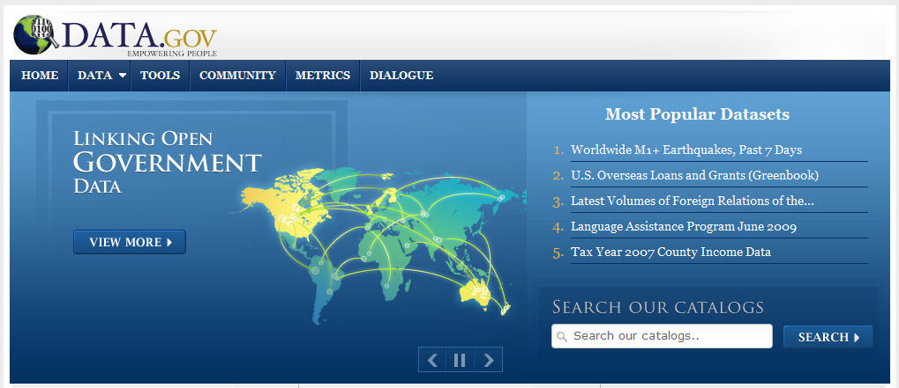

La legislazione sul software aperto e libero (FOSS o FLOSS che dir si voglia) in Italia è piuttosto indietro, con un Disegno di Legge (il n. 1188) presentato nel lontano febbraio 2002 da un manipolo di senatori (primo firmatario Fiorello Cortiana dei Verdi) e da allora incagliato in esame alla 1a Commissione Affari Costituzionali. Ben otto anni dunque, e nulla lascia sperare che qualcosa possa cambiare.
La legislazione sul software aperto e libero (FOSS o FLOSS che dir si voglia) in Italia è piuttosto indietro, con un Disegno di Legge (il n. 1188) presentato nel lontano febbraio 2002 da un manipolo di senatori (primo firmatario Fiorello Cortiana dei Verdi) e da allora incagliato in esame alla 1a Commissione Affari Costituzionali. Ben otto anni dunque, e nulla lascia sperare che qualcosa possa cambiare.
In realtà, a livello governativo sono state avviate alcune azioni, ma che non hanno finora portato a risultati concreti. Sempre nel 2002 fu istituita con Decreto Ministeriale una apposita “Commissione per il software a codice sorgente aperto nella Pubblica Amministrazione” il cui lavoro portò alla pubblicazione di una “Indagine conoscitiva sul software open source“. Una successiva Direttiva del dicembre 2003 “Sviluppo ed utilizzazione dei programmi informatici da parte delle PA” sancì la possibilità da parte della Pubblica Amministrazione di acquisire ed utilizzare programmi informatici “open source”. Da febbraio a luglio 2004 fu attivo poi un gruppo di lavoro, volto a proseguire i lavori della c.d. “Commissione Meo” del 2002 e che di fatto produsse un documento finale con proposte articolate tra le quali l’istituzione di un “Centro di competenza OSS per la PA” contretizzatosi nel famigerato “Osservatorio sull’open source” nato in seno al CNIPA (oggi DigitPA). Esso raccoglie le esperienze delle Pubbliche Amministrazioni italiane nell’uso di software open source, come pure una sorta di elenco dei “fornitori” di servizi legati al FOSS, al quale chiunque può registrarsi. Di fatto, ad oggi l’Osservatorio appare né più né meno che un mero elenco di “esperienze” e “fornitori”, informazioni peraltro non più aggiornate dal 2007.
Insomma, buone le intenzioni, ma davvero scarsi i risultati, almeno finora. E se andassimo a fare due conti su quanto saranno costati Commissione, Gruppo di lavoro e Osservatorio stesso, forse ci morderemmo anche le mani in qualità di contribuenti…
Una iniziativa da segnalare è senza dubbio quella attuata dal Formez con la Italian Open Data Licence (IODL) v1.0, nata nell’ambito del progetto MiaPA, l’applicazione di “social check-in” per segnalare la performance degli uffici pubblici da parte dei cittadini. Formez auspica l’uso della IODL da parte delle amministrazioni pubbliche che vogliano imboccare concretamente un percorso di open government.
Un ulteriore riferimento legislativo di fondamentale importanza per tutto quanto concerne i dati digitali – e del quale le iniziative legislative regionali devono tenere conto – è costituito dal D.Lgs. 07/03/2005 n. 82 e s.m.i. il cosiddetto Codice dell’Amministrazione Digitale, che purtroppo però trascura totalmente proprio la materia degli open data.
Ottime notizie da alcune Regioni… e non solo
Svariate illuminate Regioni hanno comunque deciso già da anni di dotarsi di leggi proprie per favorire l’uso del software open source. L’Emilia-Romagna ha emanato la L.R. 11/2004, il Friuli Venezia Giulia la L.R. 8/2006, l’Umbria la L.R. 11/2006, il Veneto la L.R. 19/2008, il Piemonte la L.R. 9/2009 e la Toscana la L.R. 54/2009. La Lombardia ha in essere un progetto di legge presentato a luglio del 2010, così come la Sardegna ha un proprio disegno di legge in cantiere risalente a ottobre 2008. Recente poi è la notizia (grazie Antonio) che addirittura il Consiglio Comunale di Fabriano ha deciso di “abbracciare” il software open source, dimostrando che anche una piccola amministrazione locale è capace di grandi rivoluzioni a livello gestionale.
Come riferimento per aggiornamenti riguardo la normativa, sia nazionale che regionale, potete prendere certamente a riferimento l’Associazione per il software libero.
Anche il Presidente Vendola nella mia Puglia ha annunciato mesi fa la presentazione di un disegno di legge sul pluralismo informatico, teso a promuovere e diffondere il FLOSS (così definito nel DdL) a livello regionale. Si tratta di una iniziativa che apparentemente stride, e anche parecchio, con il precedente protocollo d’intesa firmato da Vendola con Microsoft verso fine 2010 per la costituzione di un centro di competenza per promuovere l’innovazione. Il Partito Pirata italiano e l’Associazione per il Software Libero hanno sin da subito contestato l’accordo, chiedendo a Vendola di rispondere ad una lettera aperta. Cosa che lui ha fatto, motivando dal suo punto di vista le ragioni dell’iniziativa. Interessante notare come la vicenda abbia destato molti interessi e dubbi anche all’estero.
Pur lasciando molto perplesso anche me, non voglio qui riprendere la discussione, già avviata nei contesti che vi ho segnalato. Sembra però che le critiche abbiano indotto Vendola a cercare di capirne un pò di più sulla questione. E’ infatti sempre di dicembre scorso la notizia riportata da Punto Informatico che Vendola abbia avuto un incontro con Richard Stallman, guru del software libero, per “fare un approfondimento con alcuni dei protagonisti più importanti della battaglia per il software libero” e addirittura abbia pensato di coinvolgerlo nella revisione proprio del DdL sul pluralismo informatico. Ad oggi però non sappiamo se l’incontro abbia avuto degli sviluppi di qualche tipo.
In Puglia si potrebbe osare di più…
Bene, con tali favorevoli presupposti e grande lungimiranza da parte di Vendola, mi viene spontaneo rilanciare e cogliere l’occasione per capire se a Nichi stia a cuore anche la grande questione riguardante i dati aperti.
Di open data se ne è parlato ampiamente, in varie forme e con illustri personaggi, anche durante il Festival dell’innovazione - ma soprattutto il contestuale Public Camp - entrambi organizzati proprio dalla Regione Puglia a Bari agli inizi di dicembre 2010.
Su TANTO seguiamo l’hype che ormai si è avviato sull’onda dell’open government e sugli open data da qualche tempo, e ovviamente come blogger cerchiamo non solo di far da volano a notizie e iniziative sul tema, ma anche di essere propositivi, con la realizzazione di mashup con dati aperti e liberi e la partecipazione diretta a eventi (ITN 2010 e il Gis Day 2010 di Palermo).

Ed è in quest’ottica che noi di TANTO vogliamo avanzare la proposta al Presidente Vendola e alla sua Giunta, di integrare il Disegno di Legge sul pluralismo informatico che stanno per presentare in Consiglio Regionale, con alcuni articoli che promuovano la diffusione di dati aperti e liberi nell’ambito dell’amministrazione regionale come pure in tutte le altre pubbliche amministrazioni pugliesi, dai Comuni alle Province. Penso ad esempio al grande valore aggiunto del quale potrebbero godere i cittadini con la diffusione in formato aperto e il libero utilizzo dei dati di monitoraggio delle componenti ambientali (aria, acqua, suolo) e dei grandi comparti come quello dei rifiuti. Del resto il Sistema Informativo Territoriale pugliese già consente da tempo lo scaricamento e la fruizione libera (sebbene manchi una chiara definizione della licenza d’uso) dei dati territoriali.
Perciò, qui di seguito proponiamo alcuni articoli da includere nel DdL sul pluralismo informatico, che riguardano proprio i dati aperti e liberi. Naturalmente si tratta di una proposta certamente perfettibile, ed è per questo che invitiamo tutti i nostri lettori e chiunque abbia interesse, ad avanzare proprie proposte per migliorarla. Il nostro obiettivo è quello di presentarle ufficialmente al Presidente Vendola, e se verranno mai accolte, la Regione Puglia sarebbe la prima a sancire legislativamente la diffusione di dati aperti e liberi. Il passo successivo sarebbe ovviamente quello di costruire un portale regionale, punto di riferimento istituzionale, analogamente a quanto fatto in maniera così lungimirante dalla Regione Piemonte con http://dati.piemonte.it
Gli emendamenti che proponiamo al DdL
Il testo del DdL n. 5 del 10/02/2011 “Norme in materia di pluralismo informatico, sull’adozione e la diffusione del free libre open source software e open hardware e sulla portabilità dei documenti nella pubblica amministrazione regionale e locale” proposto dalla Giunta della Regione Puglia è reperibile sul sito web del Consiglio Regionale, nella sezione “Proposte di Legge” con Atto Consiliare n. 68. Sul medesimo sito, per chi volesse, è possibile seguirne l’iter istitutivo.
Qui di seguito proponiamo in maniera molto asciutta ed essenziale le poche modifiche al testo in discussione, che potrebbero dargli obiettivi ancora più ampi, unendo in maniera sinergica la promozione dell’utilizzo del FLOSS con la liberazione dei dati pubblici, in possesso proprio delle Pubbliche Amministrazioni.
Art. 1 – Finalità
Dopo le parole “nel rispetto della normativa statale in materia di informatizzazione della Pubblica Amministrazione” inserire le seguenti parole “e in particolare da quanto disposto dal D.Lgs. 07/03/2005 n. 82 e s.m.i.“.
Art. 3 – Definizioni
Inserire le seguenti definizioni:
q) per dati pubblici si intendono tutti i dati conoscibili da chiunque, così come definiti alla lett. n) del D.Lgs. 07/03/2005 n. 82 e s.m.i. I dati pubblici sono dati che non sono soggetti a limitazioni di privacy o sicurezza.
r) per dati aperti (o open data) si intendono quei dati organizzati in archivi che, nel rispetto delle condizioni così come definite alla lett. b), c) e d) del presente articolo, nonché al Capo V del D.Lgs. 07/03/2005 n. 82 e s.m.i., rispondono ai seguenti requisiti:
- sono resi direttamente disponibili ai chiunque, senza necessità di identificazione informatica, come disposto dal comma 3 art. 54 del D.Lgs. 07/03/2005 e s.m.i.;
- sono ricercabili per parole chiave o per ambito tematico mediante strumenti quali cataloghi o motori di ricerca;
- sono pubblicati così come raccolti alla fonte, con il medesimo livello di definizione e di dettaglio, non in forma aggregata o modificata;
- sono immediatamente disponibili, al fine di preservarne il valore, l’attendibilità e l’integrità;
- sono strutturati in modo tale da consentire il loro trattamento automatizzato da parte di elaboratori e macchine;
- sono disponibili in formati non proprietari, ovvero secondo standard aperti;
- non devono essere soggetti a copyright, brevetti, marchi di fabbrica o regole sul segreto commerciale, eventuali limitazioni sulla privacy e/o la sicurezza possono essere ammesse come disciplinate dalle leggi vigenti;
- indicano le metodologie di realizzazione adottate.
s) per formato proprietario (o chiuso) si intende qualsiasi formato di archivio dati le cui specifiche tecniche non siano di pubblico dominio o non siano disponibili gratuitamente, ovvero siano soggette a restrizioni basate su diritti d’autore.
Art. 6 – Raccolta e gestione dei dati da parte della Pubblica Amministrazione [in sostituzione degli artt. 6 e 6 bis]
1. Tutti i servizi telematici messi a disposizione dalla Pubblica Amministrazione Regionale e Locale devono rispettare rigorosi criteri atti a favorire i massimi livelli di accessibilità sia per i diversamente abili sia in termini di neutralità tecnologica.
2. La Pubblica Amministrazione Regionale e Locale, con riferimento ai dati pubblici dalla stessa raccolti e gestiti, adotta standard aperti, protocolli aperti e formati aperti, così come definiti alle lett. b), c) d) dell’art. 3, rispettando i criteri dei dati aperti così come definiti dalla lett. r) dell’art. 3.
3. La Pubblica Amministrazione Regionale e Locale in possesso di dati pubblici promuove la loro diffusione in forma di dati aperti, come definiti alla lettera r) dell’art. 3, con modalità che ne consentano la rintracciabilità dai motori di ricerca su internet e lo scaricamento dai siti web istituzionali delle Pubbliche Amministrazioni stesse assicurando la parità di trattamento tra gli utilizzatori.
4. La Pubblica Amministrazione Regionale e Locale si impegna affinché tutti i servizi messi a disposizione siano interoperabili, facciano uso di protocolli e formati aperti, e permettano, attraverso lo sviluppo di piattaforme applicative comuni, l’interazione e l’integrazione fra di loro.
5. La Pubblica Amministrazione responsabile dei dati, al fine di rendere effettivo l’utilizzo dei dati in suo possesso, designa il responsabile del procedimento per le richieste di utilizzazione dei dati e per rispondere alle denunce di violazioni dei principi di cui alla lettera r) dell’art. 3.
Art. 7 bis – Ulteriori obblighi della Pubblica Amministrazione allargata [nuovo articolo]
1. La Pubblica Amministrazione nella predisposizione dei bandi di gara, nonché nella selezione di progettisti, collaboratori e consulenti, richiede, con apposita clausola contrattuale, che il fornitore, il consulente o l’appaltatore del servizio fornisca i dati dallo stesso raccolti, nonché i pareri, le consulenze ed i progetti, oltre che nelle forme tradizionali, anche in formato digitale e con standard che ne consentano l’elaborazione da parte di elaboratori e la modificabilità da parte della Pubblica Amministrazione.
2. I dati detenuti dalle Pubbliche Amministrazioni Regionali e Locali, così come definito alla lett. m) del D.Lgs. 07/03/2005 n. 82 e s.m.i., ivi compresi i dati prodotti da software sviluppato da terzi, memorizzati in un formato proprietario per il quale le Pubbliche Amministrazioni Regionali e Locali detengono tutti i diritti, saranno convertiti in formati aperti entro due anni dalla data di entrata in vigore della presente legge.
3. I dati esistenti memorizzati in un formato proprietario, del quale la Pubblica Amministrazione Regionale e Locale non possiede i diritti, potranno continuare ad essere memorizzati ed elaborati in quel formato. Progetti e attività che continuano ad usare formati chiusi devono essere riesaminati ogni quattro anni, per determinare se il formato sia diventato aperto e, in caso contrario, se un formato appropriato aperto esista e possa essere adottato in luogo di quello proprietario.
4. In caso di progetti impegnati a convertire dati già esistenti da un formato proprietario in un altro formato, per quest’ultimo deve essere scelto un formato di dati aperto, a meno che non vi siano motivi tecnici o giuridici che lo impediscano.
5. In caso vengano resi pubblici dati esistenti, questi devono essere convertiti in formati aperti, tenendo conto delle situazioni descritte nei commi precedenti.
“Open data, tutti ne parlano, ma come si fa?”
Per rispondere a questa domanda, l’Associazione italiana per l’Open Government ha da poco messo online le “Linee guida per l’open data”, una sorta di vademecum indirizzato a tutti i soggetti che hanno seriamente intenzione di liberare i dati in loro possesso. Una agile cassetta degli attrezzi nella quale troviamo le definizioni fondamentali di open data e open government, perché passare agli open data, quali aspetti tecnici affrontare e le questioni giuridiche ad essi collegate.
Un’altra indispensabile risorsa da tenere presente è Making Your Data Open: a Guide di Open Data Commons, un progetto della Open Knowledge Foundation che ha come obiettivi proprio la diffusione del concetto di open data e il supporto per la loro adozione.
Da poco è stato inoltre lanciato APPSFORITALY, un contest organizzato da Associazione Italiana per l’Open Government, IWA e TopIX per la realizzazione di applicazioni basate su dati pubblici rilasciati da amministrazioni pubbliche. Ma se gli open data disponibili sono ancora così pochi, sarà difficile avere un buon numero di partecipanti.
Insomma, gli ingredienti ci sono tutti, le opportunità anche, la gente non manca… Quale migliore occasione dunque per la Regione Puglia affinché approvi il DdL e contribuisca concretamente a scatenare la creatività di tutti gli hacktivisti che ci sono in giro per l’Italia?
L'articolo Puglia, laboratorio anche per l’open source… e l’open data? è apparso originariamente su TANTO. Rispettane le condizioni di licenza.
]]>Un documento di portata eccezionale molto recente è, invece, il Memorandum sulla Trasparenza e l’Open Government di Barack Obama (gennaio 2009) che, sancendo i principi dell’Open Government (trasparenza, partecipazione e collaborazione), ha prodotto la nascita del portale governativo americano data.gov al fine di incrementare l’accesso pubblico ai dati prodotti dai vari dipartimenti del governo federale, dati che sono rilasciati rigorosamente in formato aperto (Open Data).

Altro provvedimento scaturito dal memorandum presidenziale è l’Open Government Directive del dicembre 2009 (già citata da Sergio Farruggia nel suo ultimo post), che definisce nel dettaglio gli adempimenti dei dipartimenti esecutivi e delle agenzie per l’implementazione dei suddetti principi secondo scadenze temporali molto ristrette (solo 45-60 giorni!).
Una forte carica di innovazione era d’altronde già presente nell’illuminante talk di Tim Berners-Lee al TED 2009 (di cui TANTO si era occupato qui), in cui si auspicava un nuovo cambio di prospettiva della rete delle reti da attuarsi mediante il rilascio dei raw data: solo ponendo in relazione tra loro i dati grezzi, ottenendo i linked data, è possibile portare alla luce il loro enorme potenziale inesplorato, ovvero quel valore aggiunto implicitamente contenuto in essi. Era nato dunque l’Open Data Movement.
Tali eventi non hanno tardato a sortire i loro effetti in giro per il mondo. Da allora stiamo assistendo al proliferare di altre iniziative in tal senso, tra le quali spiccano i portali del Regno Unito, della Nuova Zelanda e dell’Australia. Inoltre, anche la Banca Mondiale (si veda il post di Pietro Blu Giandonato) e, sempre in UK, l’Ordnance Survey hanno recentemente liberato una cospicua parte dei dati in loro possesso al fine di promuoverne il riuso.
Brown asked: “What’s the most important technology right now? How should the UK make the best use of the internet?” To which the invigorated Berners-Lee replied: “Just put all the government’s data on it.” To his surprise, Brown simply said “OK, let’s do it.”
(da Goodbye Gordon Brown: but thanks for the data … and the campaign goes on)
La direttiva sull’Open Government rappresenta non solo un importante tassello strategico nel disegno della trasparenza politica obamiana, ma produce concretamente anche la possibilità di sviluppare business, innescando “una competizione sulla qualità dei servizi e delle applicazioni prodotte, che genererebbe sicuramente una ripresa di tutto il settore dell’economia immateriale“, come spiega Gianluigi Cogo nell’approfondimento di Nóva dedicato all’Open Data.
La liberalizzazione dei dati secondo standard aperti ha infatti scatenato iniziative come Apps for democracy che, nell’arco di un mese, ha prodotto la realizzazione di ben 47 applicazioni di pubblica utilità per il web, iPhone e Facebook con un ritorno economico sull’investimento stimato intorno al 4000%. Per comprendere meglio le potenzialità derivanti dall’uso degli open data, un interessante caso di studio ci viene offerto dal Canada, dove è stata scoperta una maxi frode fiscale che ha coinvolto le maggiori società di beneficenza del Paese per un importo pari a ben 3,2 miliardi di dollari.
E’ possibile quindi realizzare un primo punto della situazione del movimento globale Open Data, così come ha fatto Tim Berners-Lee al TED 2010 (il talk è sottotitolato anche in italiano):
L’esempio di utilizzo degli Open Data forse più emblematico presentato da Berners-Lee è quello della mappa disegnata da un avvocato per dimostrare la forte correlazione esistente tra le case occupate da bianchi e quelle collegate all’acquedotto, risultato della discriminazione razziale verso i neri a Zanesville (Ohio, USA), che ha convinto il giudice a condannare la contea ad un risarcimento di oltre 10 milioni di dollari. Tale applicazione è la semplice dimostrazione di quali interessanti informazioni sia possibile ottenere, ponendo in relazione gli Open Data, in settori quali ad esempio l’epidemiologia geografica (a tal proposito si veda questo post).
Inoltre, proprio in questi giorni, è trascorso il primo anniversario di data.gov ed è possibile trarne un primo entusiasmante bilancio direttamente dal CIO Vivek Kundra sul blog della Casa Bianca.
Di fronte all’evidente pragmatismo del mondo anglosassone, probabilmente il lettore si chiederà cosa si sta facendo adesso o si farà in futuro in Italia. In tal senso, si ritiene opportuno segnalare questa intervista ad Ernesto Belisario, avvocato ed esperto in diritto delle nuove tecnologie, secondo il quale la pubblicazione e l’accesso ai dati pubblici in Italia è attualmente una sorta di percorso ad ostacoli. In particolare, egli sostiene che da un lato ci sono problemi a livello organizzativo:
- la Pubblica Amministrazione, fatte le dovute eccezioni, generalmente non è pienamente consapevole del consistente patrimonio di dati in suo possesso;
- soltanto una minima parte dei dati in possesso della PA è disponibile in formato digitale e, nei casi in cui lo è, non sempre è garantita l’interoperabilità;
- inoltre, i dati non sempre sono acquisiti con una licenza tale da consentirne la pubblicazione ed il riuso.
Dall’altro, esistono anche evidenti limiti a livello normativo:
- la legge generale sul procedimento amministrativo che, a differenza degli USA in cui ogni cittadino – in quanto tale – ha il diritto di accesso ai dati pubblici (right to know), prevede il possesso di un interesse specifico e qualificato per poterlo fare (need to know);
- una normativa sulla privacy troppo rigorosa che limita notevolmente la trasparenza e l’accesso ai dati, impedendone di fatto l’indicizzazione da parte dei motori di ricerca;
- il Codice dell’Amministrazione Digitale che, pur avendo una portata rivoluzionaria, in quanto consentirebbe alla PA di rendere disponibili i propri dati in formato aperto, tuttavia non va a modificare la legge sulla trasparenza amministrativa e né la legge sulla privacy.
In definitiva, c’è molto lavoro da fare, ma qualcosa comincia a muoversi. Recentemente stiamo assistendo all’apertura del PCN (futuro geoportale nazionale di INSPIRE) nei confronti del movimento OpenStreetMap (si veda il seguente post) e alla nascita del primo portale Open Data italiano, dati.piemonte.it. Sicuramente, non è finita qui!
L'articolo Open Government e Open Data: bilanci e prospettive è apparso originariamente su TANTO. Rispettane le condizioni di licenza.
]]>NDR: questo articolo viene pubblicato in contemporanea anche su MobilitaPalermo, un importante blog cittadino non “tecnico”. Per questa ragione nel testo sono stati inseriti dei riferimenti che potranno sembrare scontati per il lettore “tipico” di TANTO.
Il 23 febbraio di quest’anno, in occasione del primo Open Data Day italiano, ho assistito alla presentazione della strategia Open Data del Comune di Palermo.
Sono andato con entusiasmo all’incontro, ma sono tornato a casa pieno di dubbi, perché in quell’occasione ho avuto la sensazione che di strategia ce ne fosse poca, e che il Comune stesse realizzando l’apertura dei dati detenuti con poca consapevolezza.
Non è stato presentato un documento sulle linee guida, né tantomeno è stata annunciata una sua imminente realizzazione. Non è stata data alcuna comunicazione sugli investimenti ed il budget messo a disposizione per il mantenimento e l’ulteriore sviluppo del piano inerente la liberalizzazione dei dati. Sono state accennate, peraltro in modo molto generale, un paio di evoluzioni possibili del progetto, ma senza associarle ad una scadenza temporale, e non definendone le modalità di realizzazione.
Si è ancora in tempo per fare, ad esempio, queste due attività di divulgazione:
- esplicitare ai cittadini l’intero iter che si vuole seguire, definendo con chiarezza: cosa ci si aspetta di ottenere; quali impegni concreti prende l’amministrazione; a quali vincoli le decisioni sono sottoposte (normativi, finanziari, istituzionali, ecc.);
- fornire tutte le informazioni necessarie affinché la partecipazione dei cittadini si possa basare su una conoscenza approfondita dei temi oggetto di discussione e non su semplici sensazioni;
Sono due punti “rubati” da un bell’articolo di Claudio Forghieri. L’articolo parla d’altro, di crowdsourcing applicata alla Pubblica Amministrazione, ma contiene diversi spunti utili per il tema degli OpenData, sia per i decisori che per i cittadini.
Discutere di dati aperti significa parlare di trasparenza dell’attività della P.A., ma anche e soprattutto, in questo momento di crisi, di opportunità per i cittadini, per gli sviluppatori, per le aziende.
Come detto, dalle istituzioni ci si aspetta, quanto meno, che venga tracciata una road map da seguire (si confronti, ad esempio, i principi chiave sugli open data del Comune di Milano con la sezione opendata del Comune di Palermo), ma anche che le stesse istituzioni interagiscano con la società civile (cittadini, aziende, ecc.).
Le due aspettative sono state finora entrambe disattese.
A distanza di due mesi da quella presentazione, non riscontro evidenze che migliorino questo quadro e navigando sul sito saltano subito agli occhi questi elementi:
- dal giorno del lancio non sono stati pubblicati nuovi dataset. Se ne ha evidenza nel box “Ultimi dataset” presente sulla pagina web del Comune dedicata agli Open Data;
- non è stato inserito un motore di ricerca dedicato, né tantomeno i dati sono pubblicati in modo da “essere facilmente identificabili in rete, grazie a cataloghi e archivi facilmente indicizzabili dai motori di ricerca” (vademecum OpenData);
- alcuni dati sono pubblicati in formato proprietario (ad esempio il formato .rar);
- i dataset non sono strutturati in modo tale da essere presentati in maniera sufficientemente granulare, così che possano essere sempre utilizzati dagli utenti per integrarli e aggregarli con altri dati e contenuti in formato digitale (Project Work Open Government Data)
- i dataset hanno un corredo scarso di metadati descrittivi;
- soltanto due dataset sono stati fatti confluire verso dati.gov.it, il Portale nazionale dei dati aperti.
Ho scritto quattro email al Comune di Palermo e non ho mai avuto alcuna risposta. Nel giorno della presentazione era stato chiesto ai presenti di vivere in modo partecipato l’iniziativa, e che i responsabili del Comune sarebbero stati in ascolto e lieti di ricevere contributi dai cittadini. Sulla sezione del sito dedicata si legge: “Se vuoi proporre la pubblicazione di ulteriori dati interessanti e/o per eventuali segnalazioni contattaci“.
L’esperienza professionale e umana mi ha avvicinato molto al mondo degli Open Data. Per tale ragione scriverò a seguire anche alcune cose un po’ più “tecniche” e specifiche, perché l’esperienza è anche un grande supporto alla comunicazione. Partirò proprio dalle email che ho inviato.
Nella prima scrivevo “[...] solo per consigliarvi di non usare il formato .rar per i file compressi, in quanto è un formato proprietario [...].” Come detto, oltre a non ricevere alcuna risposta, i file .rar continuano ad essere presenti nel sito (ad esempio qui).
Nella seconda, in riferimento al dataset “PERIMETRAZIONE CIRCOSCRIZIONI COMUNALI“, scrivevo: “[...] è presente una grave lacuna: manca il file con la definizione del sistema di coordinate.[...]“. Il dataset è ancora sprovvisto di questa informazione fondamentale.
Nella terza segnalavo che il dataset “ELEZIONI AMMINISTRATIVE 2012 - AFFLUENZA ALLE URNE” non fosse scaricabile. Da qualche giorno è possibile farne il download.
Nell’ultima, un po’ più complessa, facevo notare come il dataset “TURISMO - ELENCO DEI SITI TURISTICI VISITABILI” contenesse alcuni errori. Questi sembrano stati corretti, ma l’ho scoperto per caso oggi.
Suggerisco al comune di creare un sistema di feedback, al limite anche automatico, altrimenti qualsiasi sistema di segnalazione non ha quasi alcuna utilità funzionale e sostanziale.
Quest’ultimo dataset è quello più scaricato, quello che sembra più interessante per gli utenti del sito. Incuriosito dal numero di download l’ho scaricato ed ho provato a farci qualcosa, con l’obiettivo di testare concretamente l’efficacia di questa azione e di restituire anche qualcosa indietro.

Il dataset dei siti turistici visitabili della città di Palermo
Palermo è una città con un centro storico molto grande (in alcune classifiche è riportato come il più grande d’Europa). E’ quindi di elevato interesse turistico e ricca di siti visitabili. Pubblicare in Open Data questo dataset è un’ottima scelta, perché si presta potenzialmente ad uno degli scopi principali di questo tipo di azione: il riuso da parte di cittadini, professionisti e aziende. Una persona, infatti, potrebbe scaricare questi dati e farne ad esempio una app per smartphone, utile a chiunque voglia scoprire questa bella città. Realizzarla in più lingue, metterla in vendita in uno store dedicato, guadagnare il giusto e contribuire a rendere Palermo più fruibile.
Il dataset relativo è così descritto sul sito:
La tabella contiene i dati relativi ai siti turistici visitabili in città. Sono distinti il tipo sito, la denomianzione del sito, la descrizione, l’indirizzo, info, orario di accesso al sito, note relative all’orario di accesso al sito, l’eventuale necessità di biglietto di ingresso con i relativi costi ed esenzioni, contatto mail, sito web dedicato, note per eventuali visite guidate ove possibile, informazioni sull’accessibilità.
La descrizione, a parte un piccolo errore di battitura (“denomianzione” per “denominazione”), è chiara e abbastanza autoconsistente. Del dato originale però non sappiamo altro, salvo il suo formato (.csv) e il nome del responsabile (Dott. Eliana Calandra).
Sono presenti in realtà altre informazioni – come ad esempio la “Data di creazione” – ma non riguardano il dato originale, e lo descrivono soltanto in relazione alla sua pubblicazione nella sezione Open Data del sito del Comune.
L’assenza di informazioni fondamentali sul dataset e propedeutiche affinché il dato possa essere realmente usato e abbia un valore concreto, ne sminuisce fortemente il valore e la sua usabilità, vanificando, di fatto, lo scopo per il quale è stato pubblicato.
Ad esempio, uno di questi è l’indicazione della data di aggiornamento: quando è stato redatto questo archivio?
Un dataset turistico deve essere recente ed aggiornato per avere valore, infatti cambiano con una certa frequenza elementi informativi come: costi di eventuali biglietti ingresso, orari di apertura, numeri di telefono, ecc..
Altra informazione omessa nella pubblicazione del dataset è quella relativa alla scelta progettuale che c’è alle spalle dell’archivio. Contiene 100 siti. Viene da domandarsi: sono tutti quelli visitabili in questa città? Se non lo sono, che filtro è stato applicato? Sono 100 perché si è filtrato soltanto in base a “chiese e oratori” (59), “musei e gallerie d’arte” (26) e “ville e giardini” (15)? Perché ci sono siti di Bagheria e non di altri comuni?
Il dataset analizzato si presta alla rappresentazione cartografica, ma non contiene le coordinate dei vari siti contenuti. Tuttavia è presente l’indirizzo ed è su questo che ho eseguito un’operazione di geocoding.
Prima di farlo però, l’ho analizzato un po’ più nei dettagli. A seguire alcuni degli elementi riscontrati:
- l’anno di costruzione dei siti è inserito nel campo “Nome del sito”. In questo modo è un’informazione poco utilizzabile. Sarebbe preferibile inserirla in un campo dedicato (l’ho fatto). Che questo numero presente nel campo sia l’anno di costruzione è una mia deduzione, ma non posso esserne certo.
- ci sono due righe per la “Chiesa di S. Maria in Valverde (1633)”. L’unica differenza sembra l’indirizzo, ma tutti gli altri dati sembrano coincidenti.
- ci sono 8 strutture in cui non è inserito il numero di telefono. Per un dataset di questo tipo è una grave lacuna; basti pensare che mancano quelli dell’Orto Botanico e della Cappella Palatina.
- il campo “info” contiene essenzialmente i numeri di telefono, ma mescolati alle volte con elementi altrettanto utili come “Sito è visitabile solo in occasione di mostre e/o eventi” o “Chiusa per restauro”. Penso che sarebbe preferibile creare un campo “telefono”, distinto da un generico “info”.
- il campo “indirizzo email”, importantissimo a fini turistici, non è mai valorizzato. In realtà lo è una sola volta, nel caso della “Chiesa di S. Cristina La Vetere (1174)”, ma è stato scambiato con il valore contenuto nel campo “sito web” (l’ho modificato).
- gli URL dei siti web sono inseriti di solito con questa struttura ” www.nomesito.it“. Alcuni record però sono difformi (“http://www.nomesito.it” o ad esempio “web: www.nomesito.it”). Li ho uniformati alla struttura www.nomesito.it
- nel campo “descrizione del sito” è possibile leggere sia “chiesa” che “Chiesa”, “Cappella” e “cappella”; ho uniformato i nomi di categoria in minuscolo.
- solo la “Cattedrale” ha informazioni sull’accessibilità. Mi sembra un’informazione propedeutica per qualsiasi dataset di informazioni su siti turistici.
- sono presenti numerosi spazi doppi, ed alcuni caratteri di tabulazione, che non hanno ragione di essere presenti, e che disturbano la gran parte delle eleborazioni automatiche via software.
- il nome via corretto per “Corso Vittorio Emanuele” dovrebbe essere “Via Vittorio Emanuele”.
Fatta questa rapida analisi del dato, sono passato a fare il geocoding sfruttando le API dedicate di Google. Queste consentono con una chiamata in HTTP, partendo da un indirizzo postale, di avere restituito (tra le altre cose) latitudine e longitudine dell’indirizzo. Per conoscere, ad esempio, quelle di “Via Terrasanta 82, Palermo” lancerò questo URL:
http://maps.googleapis.com/maps/api/geocode/xml?
address=Via%20Terrasanta%2082,%20Palermo&sensor=false
L’output in questo caso è in XML e tra le informazioni che mi vengono restituite ci sono proprio quelle che cerco, latitudine e longitudine:
<location> <lat>38.1303072</lat> <lng>13.3445130</lng> </location>
Ma si tratta soltanto di uno strumento e come tale ha anche lui i suoi problemi. Due esempi tra tanti:
- non sono presenti nel database di Google tutti i numeri civici, come ad esempio “Piazza Casa Professa, 21″ o “Piazza S. Valverde, 3″. Il problema è risolvibile integrando gli strumenti di Google a quelli di Bing Maps, Pagine Gialle, OpenStreetMap, e lo sarà ancora di più quando il comune pubblicherà in Open Data il dataset del viario e dei numeri civici.
- in Google Maps si legge “Via Nasi Nunzio, 18, Palermo” e non “Via Nunzio Nasi, 18, Palermo”, e si inverte il classico ordine “Nome Cognome”
Il problema principale legato alla geocodifica è che però la metà dei siti sono associati ad indirizzi senza numero civico, e quindi non è possibile ricavarne la posizione automaticamente. Questa è una lacuna che non è del dato in quanto tale, ma un vero e proprio “vuoto toponomastico”: non esiste un numero civico per ogni ingresso ad un edificio di una città.
Il lavoro che ho fatto è quindi incompleto, perché per questa demo mi sono fermato a ciò che era possibile automatizzare.
L’analisi e la pulizia dei dati, così come il geocoding sugli indirizzi, li ho fatti con un bellissimo software open-source multipiattaforma, che nasce proprio per ripulire i dati e derivare nuove informazioni:OpenRefine (spero di scriverci un tutorial quanto prima).
Ricavate le coordinate dei siti, ho pensato subito di pubblicare i dati online, realizzando una piccola applicazione di webmapping a solo scopo dimostrativo, che mostrasse quanto fosse semplice realizzare un prodotto gradevole, utile, moderno, i cui costi fossero soltanto legati al tempo di sviluppo.
Ho utilizzato infatti soltanto software open-source. L’ho fatto per ragioni di personale comodità, in quanto sono quelli che utilizzo maggiormente, ma anche per la grande qualità e per le funzioni disponibili.
Da OpenRefine ho estratto un file .csv, che ho convertito in GeoJSON con l’utility ogr2ogr messa a disposizione dalla libreria GDAL. Il GeoJSON è un formato ormai “classico” nel mondo del web-mapping e nativamente supportato da Leaflet, la meravigliosa libreria usata per fare questa piccola applicazione di cartografia online.
E’ molto bella perché ben documentata, di semplice utilizzo, ricca di feature e (come dicevo anche prima) moderna. Due prove evidenti sono la leggibilità della mappa prodotta su dispositivi mobili, e la possibilità (tramite plugin) di aggregare in cluster indicatori di posizione molto vicini. Nella mappa infatti tutte le volte che ad un certo livello di zoom gli indicatori sono troppo vicini, e quindi poco leggibili, vengono raggruppati in un simbolo circolare, con sovrimpresso un numero che indica da quanti elementi è formato; al click sul simbolo, si avvierà automaticamente lo zoom sulla mappa, e verranno mostrati tutti gli elementi che compongono il gruppo.
Prima di scegliere questo dataset e questo output, ho navigato un po’ nella sezione OpenData del sito del Comune, ho trovato limitante l’assenza sul sito di un motore di ricerca dedicato che mi consentisse, ad esempio, di filtrare soltanto i dati pubblicati in formato .shp (un classico formato cartografico). Ne ho costruito uno con Google Custom Search Engine (che il Comune usa per l’intero sito), con il quale posso risalire rapidamente ai soli dataset pubblicati in questo formato (basta inserire “shape” come parola chiave) o ai cinque in .csv (usate “csv” in questo caso).
Infine ho pubblicato tutto in un minisito dedicato, realizzato con Twitter Bootstrap, dove troverete:
- una pagina di introduzione;
- una pagina con un’anteprima della mappa;
- una pagina con la mappa a schermo intero, molto leggibile anche da smartphone e tablet;
- l’elenco degli strumenti principali che ho usato;
- l’elenco dei dati che ho utilizzato, sia gli originali, che quelli rielaborati;
- il motore di ricerca descritto sopra;
- dei doverosi ringraziamenti.
In conclusione
Mi rendo perfettamente conto che è facile fare critiche.
Ed è per questo che ho voluto concretamente indicare cosa ci si aspetta dalle Istituzioni quando queste dicono di “fare Open Data”. Per la stessa ragione ho voluto mettere in piedi un esempio di applicazione costruita a partire dai dati pubblicati dal Comune, una piccola cosa concreta.
L’operazione di trasparenza, innanzitutto, prende le sue mosse da una progettualità, che anch’essa deve essere correttamente descritta ed esplicitata: quali sono le finalità, quali sono le linee guida, quali sono le modalità operative, qual è il budget a disposizione, quali sono le evoluzioni e gli incrementi previsti, quali sono le modalità comunicative.
In secondo luogo, è necessario avere cura di rendere disponibili dati di qualità.
Il valore del dato aperto risiede nell’accuratezza dello stesso e nella sua ri-usabilità.
Non è solo un problema di trasparenza della P.A..
Non è solo una questione etica per cui è giusto che il lavoro della P.A. e le informazioni dalla stessa raccolte e detenute vengano poi restituite ai cittadini ed agli utenti che sono i contribuenti.
Non si tratta soltanto di correttezza metodologica e/o scientifica per cui ci si aspetta che l’elaborazione del dato avvenga secondo determinati criteri e standard elevati.
Dati di qualità, e solo questi, consentono di assolvere alla funzione per cui essi sono raccolti e pubblicati: è un problema economico, nel senso di utilizzo delle risorse per soddisfare al meglio bisogni individuali e collettivi.
Un dato aggiornato ed accurato consente il suo utilizzo nei modi più svariati.
David Miller, Sindaco di Toronto, ebbe a dire: “una volta liberati i dati, non c’è limite a quello che le persone possono farci“.
Per questo ritengo che pubblicare un tweet come questo ” Trasparenza e innovazione. Palermo VII in Italia.”
Trasparenza e innovazione. Palermo VII in Italia. Presto una App ufficiale mail.ufficistampa.org/pipermail/comu…
— Comune di Palermo (@ComunePalermo) April 23, 2013
oltre che non corretto (perché si riferisce solo alla quantità di dati) non ha senso. Quantità senza qualità non serve a nulla.
Nello stesso tweet leggo con piacere di una App ufficiale. Peccato non averla agganciata ad una gara tra sviluppatori/progettisti, per la migliore applicazione costruita a partire da dati pubblicati (anche) in Open Data.
Qualche giorno addietro ho condiviso su twitter un articolo: Open Data in Agriculture and Why It Matters. Una frase di questo articolo, che parla del valore degli Open Data nell’agricoltura, mi ha colpito: “ottimizzare il processo decisionale“.
Se l’Amministrazione apre e diffonde la propria conoscenza (i dati dalla stessa detenuti) otterrà un sicuro ritorno in termini di produttività e di partecipazione della cittadinanza, in termini di ricerca e di innovazione. Tutti elementi, questi che sospingono, specialmente in questi momenti di crisi, la crescita economica e sociale di una collettività.
Gli open data sono una opportunità per il Paese. Si tratta di crederci (la P.A. ci deve credere). Leggere in un recentissimo comunicato stampa che “Il nuovo Statuto del Comune si ispirerà ai principi della trasparenza e della partecipazione e su riconoscimento, tutela e valorizzazione dei beni comuni“, mi deve fare pensare che questa amministrazione ci vuole credere. Ma questo lo diranno i fatti.
Così come devo supporre e voglio sperare che i dataset a disposizione del Comune non abbiano le stesse caratteristiche di quello descritto in questo post. Viceversa gli amministratori di questa città non avrebbero gli strumenti adeguati per gestirla bene.
Alla presentazione della strategia Open Data del Comune di Palermo è stato chiesto alla cittadinanza di contribuire all’apertura dei dati. Giusto!
A due mesi della detta presentazione vorrei, provocatoriamente, parafrasare (ribaltandola) la famosa frase di J.F.Kennedy: “non chiedetevi cosa possono fare i cittadini per l’apertura dei dati, chiedetevi cosa deve fare l’Amministrazione per produrre dati di qualità.“
L'articolo #OpenData #Palermo: alcune osservazioni dopo due mesi è apparso originariamente su TANTO. Rispettane le condizioni di licenza.
]]>Pur trattandosi di una versione beta, rappresenta indubbiamente una pietra miliare che dimostra la fattibilità dell’Open Data anche in Italia, nonostante le difficoltà di cui si accennava in questo recente post.
Ma vediamo in dettaglio di cosa si tratta. La pagina di accesso al portale si presenta con una grafica semplice ed accattivante su cui campeggia in primo piano il principio di fondo dell’iniziativa, una vera e propria dichiarazione di intenti in perfetto stile Government 2.0 ed in completo accordo con il senso della Direttiva 2003/98/CE del Parlamento europeo:
I dati pubblici sono di tutti
I dati in possesso della Pubblica Amministrazione sono un patrimonio informativo prezioso per la società e l’economia. La Regione Piemonte intende metterli a disposizione di cittadini e imprese per stimolare un nuovo rapporto fra pubblico e privato e favorire lo sviluppo di iniziative imprenditoriali.
A valle di questa esaltante premessa, seguono immediatamente pochi ma efficaci menù che rimandano ai contenuti del portale, dopodiché si va direttamente al sodo, accedendo direttamente ad un piccolo assaggio dei dati grezzi finora messi a disposizione, ad un estratto delle discussioni più recenti nel blog ed, infine, ad una sezione dedicata al riuso dei dati pubblici, dotata di una presentazione multimediale esplicativa sull’argomento.
Curiosando all’interno della sezione Dati, è possibile osservare che:
- al momento sono presenti solo alcuni set di dati, tuttavia assicurano che a questi se ne aggiungeranno progressivamente degli altri, anche su richiesta degli utenti;
- i dati grezzi sono descritti da metadati (informazioni sui dati);
- sono resi disponibili in formato CSV e, di conseguenza, sono consultabili mediante un qualsiasi editor di testo;
- sono aggregati a scala provinciale e, talvolta, comunale;
- è facile verificare come siano indicizzati nei principali motori di ricerca e quindi siano di facile reperibilità anche all’esterno del portale;
- infine, sono corredati di un contratto di licenza in cui si afferma chiaramente che la Regione Piemonte ne detiene la titolarità e ne “autorizza la libera e gratuita consultazione, estrazione, riproduzione e modifica [...] da parte di chiunque vi abbia interesse per qualunque fine, ovvero secondo i termini della licenza Creative Commons – CC0 1.0 Universal” (dominio pubblico).
Benissimo! Siamo certamente ancora distanti dalla mole impressionante di contenuti presenti in data.gov e data.gov.uk, tuttavia sono largamente rispettate in sostanza le indicazioni del Manifesto stilato da The Guardian, contenente a mio avviso un insieme minimo di principi pienamente condivisibile.
Il rilascio dei dati grezzi prodotti dalla PA – in formato aperto e con licenze che ne consentono il riuso – può produrre effetti benefici tanto nella trasparenza dei processi decisionali delle amministrazioni, quanto nella qualità dei servizi e nell’economia immateriale che vi ruoterebbe attorno. In particolare, i raw data costituiscono una risorsa dall’enorme potenziale nascosto, che è possibile far venire allo scoperto sfruttando le relazioni esistenti tra i dati in maniera originale e creativa in fase di produzione di nuovi servizi, magari ottenendo applicazioni assolutamente impensabili da parte degli stessi produttori di dati.
TANTO si occupa ormai da diverso tempo di sensibilizzare i suoi lettori verso l’utilizzo creativo ed appassionato dei vari strumenti del web 2.0 disponibili in rete, sottolineando come essi possano rappresentare un importante mezzo di sviluppo e di crescita sia per chi si occupa di geomatica, che per l’intera collettività. A tal fine, mi piace riportare alcuni stralci di un commento di Pietro Blu Giandonato relativo a questo interessante post:
esiste ormai sul web una messe di strumenti, applicazioni, servizi, fonti di dati formidabile, che sta crescendo vertiginosamente, e della quale non resta altro che coglierne le opportunità a piene mani. [...] In un paio d’ore, tra progettazione e realizzazione, è possibile tirare su un mashup potente, semplice e veloce per mettere in strada dati reperiti altrove da più fonti, o addirittura originali! [...] E’ necessario cambiare il paradigma della geomatica in Italia, passando dal GIS come unico strumento per la rappresentazione e gestione dei dati, arrivando a una sorta di “cloudmapping” realizzato con le decine di strumenti web 2.0 che esistono in giro. Una strada peraltro che richiede essenzialmente fantasia, creatività e intuito, che permette di costruire grandi cose con piccole azioni. Il problema è ovviamente immaginarle…
Così, mi sono chiesto: è possibile visualizzare i raw data piemontesi all’interno di una piccola applicazione di web mapping facendo in modo che i risultati delle interrogazioni siano dei bei grafici, piuttosto che noiosi numeri? Certamente! Ho scelto quindi i dati relativi alle dotazioni ICT presso i cittadini e ne ho effettuato il download accettandone le condizioni di utilizzo. Trattandosi di dati in forma tabellare, li ho semplicemente importati all’interno di un foglio di calcolo di Google Docs e poi pubblicati in modo tale che “chiunque abbia accesso a Internet possa trovarli e visualizzarli“, ottenendo la struttura seguente:
I dati prescelti possono essere analizzati secondo differenti chiavi di lettura (query). Ad esempio, è possibile risalire alle dotazioni ICT per provincia e per anno, così come alla singola dotazione per provincia negli anni 2005-2009. Mi sono posto pertanto il seguente obiettivo: individuare lo strumento web 2.0 più agevole per interrogare la tabella come all’interno di un database, in modo da poter estrarre di volta in volta solo i dati necessari per ottenere il grafico corrispondente ad una particolare query. Dopo vari tentativi con Yahoo! Pipes ed YQL (Yahoo! Query Language), peraltro abbastanza ben riusciti (li trovate qui), ho individuato nel Query Language delle Google Visualisation API un’alternativa relativamente semplice ed efficiente, tale da scongiurare la necessità di dover configurare un web server e risolvere le beghe informatiche dovute alle cross-domain restrictions. Si tratta praticamente delle stesse API che consentono di ottenere dei grafici a partire dai dati.
A proposito della componente geografica, ho deciso di utilizzare come client OpenLayers (di cui si parla spesso qui su TANTO) per via della sua enorme versatilità e semplicità d’uso, un servizio TMS (Tile Map Service) di OpenStreetMap come layer di base ( i “linked data” per eccellenza!), ed i confini ISTAT delle province reperibili qui, utilizzabili per scopi non commerciali a patto di citarne la fonte. Questi ultimi sono stati convertiti nel formato GML ed opportunamente trasformati nel sistema WGS84 (EPSG:4326).
In definitiva, il funzionamento dell’applicazione è molto semplice ed intuitivo: scelta una delle opzioni (query) poste in basso, per interrogare una delle province piemontesi occorre semplicemente cliccare sulla corrispondente entità vettoriale che la rappresenta in mappa. Comparirà successivamente un popup contenente la denominazione della provincia, il titolo del grafico ed il grafico stesso (dotato di legenda, se necessaria). Questo è il mashup risultante:
Per concludere, ho alcune interessanti novità da segnalare. Nel frattempo, negli altri Paesi il modello di Open Government procede inesorabilmente la sua marcia. In particolare, nel Regno Unito è stata appena istituita una Commissione per la Trasparenza nel Settore Pubblico con il compito di guidare l’agenda sulla Trasparenza del Governo, rendendola un elemento cardine di ogni sua attività e assicurando che tutti i Dipartimenti presso Whitehall rispettino le scadenze fissate per il rilascio di nuovi dataset pubblici. Inoltre, è responsabile della definizione di standard sui dati aperti per l’intero settore pubblico, recependo ciò che è richiesto dal pubblico e assicurando l’apertura dei dataset più richiesti. Un primo importante compito della Commissione attualmente in itinere consiste nella definizione dei Principi di Trasparenza dei Dati Pubblici mediante il diretto coinvolgimento degli utenti.
Un’altra novità di rilievo è la nascita del portale italiano CKAN, un progetto ad opera della Open Knowledge Foundation. Si tratta di un catalogo di dati e contenuti aperti creato allo scopo di facilitarne la ricerca, l’uso e il riuso, al quale è possibile contribuire liberamente, fornendo informazioni sulle banche dati (metadati), quali l’URL della risorsa, l’autore e il soggetto che detiene la titolarità dei dati, la versione e la licenza d’uso.
Sempre in Italia, un’altra notizia che fa ben sperare: il Ministro per la Pubblica Amministrazione e l’Innovazione, durante un’intervista a Frontiers of Interaction 2010, ha annunciato la creazione di un data.gov italiano entro la fine dell’anno. In particolare, la pubblicazione dei dati pubblici dovrebbe servire da contromisura ai fenomeni di corruzione legati agli appalti. Finalmente! 
L'articolo I pionieri dell’Open Data in Italia è apparso originariamente su TANTO. Rispettane le condizioni di licenza.
]]> Ricorderete abbiamo già parlato della L.R. 20/2012 “Norme sul software libero, accessibilità di dati e documenti e hardware documentato”. Con Delibera di Giunta Regionale n. 2183 del 31 ottobre scorso la Regione Puglia compie un ulteriore passo avanti, definendo i primi concreti indirizzi verso l’adozione istituzionale degli open data. Il provvedimento parla espressamente di open government e riprende altri due importanti documenti istituzionali, ovvero la “Strategia regionale per la Società dell’Informazione 2007-2013” (approvato con DGR n. 508/2010), e la “Strategia regionale della smart specialization” (approvato con DGR n. 1468/2012).
Ricorderete abbiamo già parlato della L.R. 20/2012 “Norme sul software libero, accessibilità di dati e documenti e hardware documentato”. Con Delibera di Giunta Regionale n. 2183 del 31 ottobre scorso la Regione Puglia compie un ulteriore passo avanti, definendo i primi concreti indirizzi verso l’adozione istituzionale degli open data. Il provvedimento parla espressamente di open government e riprende altri due importanti documenti istituzionali, ovvero la “Strategia regionale per la Società dell’Informazione 2007-2013” (approvato con DGR n. 508/2010), e la “Strategia regionale della smart specialization” (approvato con DGR n. 1468/2012).
E’ interessante mettere in evidenza alcuni punti salienti della DGR, nello specifico:
[...] possono già essere avviate le azioni necessarie ad attuare quanto previsto dall’art.6 [della L.R. 20/2010] in materia di “riutilizzo dei documenti e dei dati pubblici”, in quanto sussistono:
- il notevole patrimonio informativo prodotto nel tempo dalla Regione Puglia, dalle sue Agenzie e Società in house oltre che da tutti gli altri soggetti pubblici e privati cui la legge regionale si riferisce;
- la consistenza della quantità di informazioni e documenti già pubblicati on line e disponibili nei diversi portali istituzionali, riferiti sia ad attività ordinarie e ad obblighi di legge che alle scelte operate in materia di Trasparenza;
- l’opportunità data, quindi, di procedere alla creazione della piattaforma dei dati aperti (Open Data) della Regione Puglia e alla promozione delle basi di dati prodotte, come leva strategica su cui puntare per creare nuove opportunità di crescita e trasparenza.
[...]
è invece necessario avviare un processo istruttorio complesso e partecipato per dotarsi del previsto Piano triennale di informatizzazione, che definisca la strategia dell’Ente in ambito informatico e del programma triennale per la promozione di progetti di ricerca, sviluppo e produzione relativi al software libero e all’Hardware documentato.
[...]
Considerato, inoltre
- che è necessario attivare azioni che producano valore aggiunto alla generazione e disponibilità di open data, per sostenerne e diffonderne un utilizzo attivo;
- che bisogna creare i presupposti per la realizzazione di un modello di open government basato sul libero accesso ai dati pubblici e di un acceleratore economico per il territorio,
in particolare:
- integrare la visualizzazione degli open data nel ciclo delle politiche pubbliche (nelle fasi di disegno, implementazione e valutazione) al fine di migliorarne la qualità stimolando l’intelligenza collettiva anche attraverso le proposte commentabili, la modellazione d’impatto, la raccolta di feedback e la valutazione partecipata;
- incentivare le aziende a riutilizzare, anche a scopi commerciali, le informazioni pubbliche e a creare applicazioni innovative basate su questi dati;
- che, quindi, è opportuno avviare prime sperimentazioni, valutarne i risultati e valorizzarne le buone prassi individuate.
Alla Direzione dell’Area Politiche per lo Sviluppo economico, il Lavoro e l’Innovazione viene affidato il coordinamento generale per l’attuazione della L.R.20/2012 e la creazione del futuro portale regionale degli open data www.dati.puglia.it nel quale confluiranno tutti i dati aperti delle strutture regionali (e non solo, si spera). Altra nota di rilievo è l’esplicita adozione della licenza IODL 2.0 sponsorizzata da www.dati.gov.it sebbene non sia ancora stata adottata ufficialmente dalla normativa dello Stato. Si tratta sostanzialmente di una CC-BY.
Infine la Regione Puglia si impegna ad avviare “prime sperimentazioni che puntino a qualificare l’utilizzo dei dati aperti come strumento di open government, attraverso percorsi partecipati” anche dedicati alle imprese innovative e alle startup giovanili che puntino al riuso dei dati aperti e alla replicabilità delle buone prassi.
L'articolo Regione Puglia e open data: avanti veloce è apparso originariamente su TANTO. Rispettane le condizioni di licenza.
]]>Per l’occasione abbiamo fatto un’intervista a Sandro Furieri, presidente dell’associazione GFOSS.it, sviluppatore di SpatiaLite e membro dell’Open Geo Spatial Consortium.
Cosa è GFOSS DAY 2012 – OSMit 2012?
Da sempre il GfossDay è la festa annuale dell’intera community italiana che ruota attorno al software libero ed agli open data in ambito geografico; non è un convegno scientifico, e non è neppure un meeting per hackers.
E’ piuttosto un punto di incontro in cui tutti coloro che sono interessati all’informazione geografica libera si trovano, parlano, si confrontano e si scambiano idee ed esperienze concrete.
OSMit rappresenta il ritrovo annuale della community italiana di Open Street Map; che non è un progetto software visto che si occupa primariamente di produrre dati, ma che proprio per questo rappresenta un tassello decisamente importante.
GfossDay ed OSMit si sono sempre svolti separatamente: quest’anno a Torino proviamo per la prima volta l’esperienza di organizzarli congiuntamente.
Restano due eventi distinti, ciascuno con la propria individualità specifica; ma la vicinanza di tempi e di spazi favorirà sicuramente un dialogo più serrato tra le due communities, che dopo tutto hanno moltissimi punti di contatto e di interesse in comune.
Quali saranno i temi forti di quest’anno e perché è importante esserci?
Quest’anno a Torino saremo ospiti di Regione Piemonte; è una circostanza particolarmente significativa perché questa regione è stata tra le prime in Italia a sposare con decisione la politica degli Open Data, quando ancora non erano diventati un ritornello così popolare e di gran moda come lo sono oggi.
Avremo numerose occasioni di incontro con le pubbliche amministrazioni piemontesi e potremo verificare direttamente cosa ha prodotto concretamente l’esperienza Open Data, specie in ambito geografico.
Ma soprattutto potremo ascoltare dalla viva voce dei diretti protagonisti il racconto delle difficoltà e dei successi che hanno costellato il percorso: immagino che sarà un’occasione di confronto molto concreto, e quindi decisamente istruttivo ed utile.
Il 2012 sembra l’anno del “consolidamento” del mondo GFOSS. Cosa c’è ancora da irrobustire e cosa di nuovo potrebbe uscire nel 2013?
Adagiarsi sugli allori è una politica notoriamente pericolosa; è sicuramente vero che il software libero ormai è un protagonista ben radicato nello scenario, e forse nello specifico GeoSpatial ancor più che in altri settori.
Ma è anche vero che siamo ormai nel pieno di una vero e proprio salto di generazione informatica; molti segnali mostrano chiaramente come l’era del PC si avvia ormai verso l’esaurimento, il futuro vedrà sicuramente la massiccia diffusione di dispositivi di nuova generazione.
Questo significa certamente nuove opportunità, ma sicuramente anche nuove sfide e nuove insidie; almeno per come si va profilando ad oggi il mondo dei Tablets sarà verosimilmente un mondo molto più chiuso di quanto lo sia lo scenario attuale.
La buona notizia è che il mondo della cartografia e delle mappe digitali sta velocemente diventando uno dei punti di forza delle nuove piattaforme, che non a caso integrano direttamente un sensore GPS che consente l’immediata localizzazione.
Le tecnologie GeoSpatial non sono più destinate ad una piccola nicchia di specialisti; ormai stanno diventando un elemento consueto del mercato mass consumer.
Questa è la sfida che siamo chiamati ad affrontare nei prossimi anni; riuscire a mettere le nostre competenze specifiche a servizio di scenari ed ambienti completamente nuovi e sostanzialmente inesplorati, cercando di contrastare il disegno di chi sta invece cercando di mettere a punto piattaforme rigidamente chiuse ed integralmente basate su una filiera totalmente e strettamente controllata dalle aziende produttrici.
Ovviamente questo vale anche e soprattutto per le cartografie e le mappe, che rischiano di diventare facile terreno di conquista per un pugno ristrettissimo di soggetti dominanti.
Qual è il profilo tipo di coloro che assistono ai GFOSS Day? E’ cambiato negli anni?
Il GfossDay si è sempre voluto connotare come una fiera variopinta dove si incontrano e si confrontano le esperienze più disparate. Al GfossDay ricercatori e docenti universitari si confrontano su un piede di assoluta parità con funzionari della pubblica amministrazione, tecnici, sviluppatori, professionisti e studenti.
La presentazione di tecnologie emergenti in assoluta anteprima mondiale marcia di pari passo con la presentazione di caso d’uso concreti che riguardano a volte comuni anche di piccolissime dimensioni.
Esiste naturalmente una platea di frequentatori abituali che partecipa regolarmente tutti gli anni, ma una buona parte dei partecipanti proviene sempre direttamente dal territorio in cui si svolge il convegno.
Lo scorso anno a Foggia eravamo ospiti della facoltà di Lettere, ed avemmo una partecipazione rilavante di archeologi. Immagino che quest’anno sarà particolarmente nutrita la partecipazione degli enti locali piemontesi.
Ma lo scopo del GfossDay è esattamente questo; essere una vetrina aperta a tutti, in cui si disseminano idee, si parla di software libero, di open data e di informazione geografica libera con tutti coloro che possono essere interessati a queste tematiche a qualsiasi titolo.
Open data, Smart Cities, Software libero, Database Spaziali, Mappe, Mobile …e chi più ne ha, più ne metta! Per partecipare a questa conferenza è necessario avere una laurea in Geografia oppure basta studiare per un mese?
Per lunghi decenni il GIS ha rappresentato una sorta di bolla stagna completamente autoreferenziale: strumenti molto complessi ed altamente specialistici per scopi altrettanto complessi e settoriali.
Oggi la maturazione complessiva delle tecnologie GeoSpatial ha raggiunto un tale livello che possiamo anche iniziare a pensare di metterle a disposizione di una platea molto più ampia che in passato, e per una gamma di applicazioni decisamente più estesa.
Sicuramente il ruolo degli specialisti resta molto importante in alcuni scenari particolari; ma ormai per riuscire a pubblicare un sito Web con contenuti cartografici anche ricchi e sofisticati non serve necessariamente uno specialista, è un compito tranquillamente alla portata di qualsiasi informatico disposto ad allargare il proprio bagaglio di conoscenze e di competenze professionali.
Sicuramente la soglia di ingresso si è notevolmente abbassata; specie per quanto riguarda gli Spatial DBMS ed i servizi Web ormai possiamo tranquillamente affermare che le tecnologie GeoSpatial non hanno proprio nulla di “esoterico” rispetto a qualsiasi altra tecnologia informatica largamente diffusa.
Per quanto riguarda i requisiti di ammissione: temo sinceramente che una laurea in geografia da sola non basti affatto per padroneggiare a fondo la complessità del settore: sicuramente anche le discipline giuridiche e quelle economiche e sociali hanno una rilevanza altrettanto determinante. Naturalmente anche le competenze informatiche “pure” stanno rapidamente diventando indispensabili.
Ma tutto questo non deve affatto scoraggiare. Come in moltissimi alti settori delle nostre società post-industriali sono proprio le competenze professionali specifiche di settore che devono sforzarsi di trovare forme di comunicazione efficaci, semplici, dirette ed universali: non viceversa.
In veste di presidente di GFOSS Italia, come completeresti, ipotizzando un mondo ideale, la seguente equazione: “Google Maps” sta a “mappe per tutti” come “GFOSS e opendata” stanno a …?
… mappe veramente libere per tutti. E per qualsiasi scopo: culturale, sociale, amministrativo, politico e perché mai no, anche economico e produttivo.
Sicuramente mappe aperte alla libera partecipazione e collaborazione di tutti i soggetti interessati. Mappe che sappiano valorizzare al meglio tutte le ricche e variegate specificità sociali, culturali e storiche tipiche di ciascun territorio locale.
Insomma, uno strumento vivo ed aperto, partecipativo e creativo, piuttosto che un “fiore di serra” coltivato artificialmente da pochissime multinazionali che operano su scala globale.
Open source, open data e open government: quali sono a tuo avviso le mutue relazioni tra questi tre paradigmi?
Open Government è un progetto politico di vasto respiro che cerca di costruire una genuina democrazia al passo con i tempi, cercando di sfruttare tutte le potenzialità delle nuove tecnologie per promuovere la partecipazione attiva, informata e consapevole dei cittadini.
Open Data è la modalità operativa che rende materialmente praticabile l’Open Government: perché solo mettendo materialmente tutto il patrimonio di conoscenza in possesso dei Governi a disposizione dei cittadini si può avere partecipazione informata e quindi consapevole.
Open Source è semplicemente una modalità tecnica di sviluppo del software; ma è anche la pietra angolare in grado di garantire che il primo obbiettivo (Open Government) non diventi semplicemente un’arma di manipolazione delle coscienze per fini politici, e che il secondo (Open Data) non finisca semplicemente per diventare un insperato regalo ed una profittevole occasione di business per le grandi multinazionali.
Insomma, una robusta iniezione di Open Source nel sistema rappresenta l’unica garanzia assolutamente trasparente che può assicurare efficacemente ai cittadini che Open Government ed Open Data siano strumenti reali di democrazia attiva, e non solo coperture di facciata che celano scopi completamente diversi da quelli proclamati.
Perché ti occupi di software libero e non di software proprietario?
Perché fin da tempi remoti mi occupo di sviluppo software; per lunghi anni ho vissuto come una grave menomazione personale il fatto che il frutto della mia fatica intellettuale finisse inevitabilmente per diventare proprietà intellettuale di altri grazie al sistema dei copyrights.
Oggi finalmente, da quando ho iniziato a sviluppare software libero, ho la soddisfazione di sapere che il frutto delle mie fatiche appartiene esclusivamente a me stesso; e posso perfino concedermi l’enorme gratificazione di metterlo liberamente a disposizione di qualsiasi essere umano che lo ritenga utile ed interessante.
Oggi si parla tanto di Smart Cities: ritieni che l’apporto utile del software libero possa fare la differenza? Se la risposta è affermativa, in che modo?
Sono personalmente convinto che Smart Cities possa essere un’ottima occasione per migliorare la qualità della vita delle nostre città sempre più complesse, caotiche e congestionate.
Una robusta iniezione di tecnologie avanzate può realmente portare numerose ricadute molto positive: basti solo pensare ai settori della tutela dell’ambiente, di un uso più efficiente e razionale dell’energia, di una mobilità più fluida e più efficace basata sull’uso innovativo di mezzi di trasporto collettivo innovativi.
Ma anche sotto al profilo politico, sociale e culturale Smart Cities può aprire prospettive decisamente interessanti.
Però attenzione: l’intera operazione Smart Cities può essere un’ottima occasione di crescita e di sviluppo collettivo. Ma può anche rischiare di risolversi semplicemente in una novella corsa all’oro per un pugno ristretto di grande aziende fornitrici. E può addirittura evocare i più nefasti scenari di controllo sociale ossessivo in stile Grande Fratello.
La differenza sarà tutta nel livello di coinvolgimento diretto ed attivo dei cittadini nei processi, e nella capacità di far nascere una micro-imprenditorialità diffusa direttamente legata al territorio piuttosto che nel favorire ulteriori processi di concentrazione monopolistica.
Naturalmente solo l’uso massiccio di software libero può offrire tutte le necessarie garanzie di apertura e di assoluta trasparenza, che in questo caso sono particolarmente critiche e delicate per la credibilità dell’operazione.
L'articolo GFOSS DAY e OSMit 2012: un’intervista a Sandro Furieri è apparso originariamente su TANTO. Rispettane le condizioni di licenza.
]]> fenomeno già ampiamente consolidato, tanto da rivoluzionare radicalmente il tradizionale modo di intendere il rapporto tra cittadini e Pubblica Amministrazione. Si veda, ad esempio, il portale Challenge.gov, dove i vari dipartimenti esecutivi ed agenzie federali americani lanciano delle vere e proprie sfide ai cittadini sulle questioni più disparate, che vanno dall’ambiente alla sanità, dall’economia alla tecnologia, a fronte della risoluzione delle quali sono previsti premi di natura economica.
fenomeno già ampiamente consolidato, tanto da rivoluzionare radicalmente il tradizionale modo di intendere il rapporto tra cittadini e Pubblica Amministrazione. Si veda, ad esempio, il portale Challenge.gov, dove i vari dipartimenti esecutivi ed agenzie federali americani lanciano delle vere e proprie sfide ai cittadini sulle questioni più disparate, che vanno dall’ambiente alla sanità, dall’economia alla tecnologia, a fronte della risoluzione delle quali sono previsti premi di natura economica.
Challenge.gov is a place where the public and government can solve problems together.
Il clamoroso ritardo del Belpaese in materia di Open Data è imputabile a diversi fattori. Da un lato, persiste di fatto l’assenza di una forte e concreta volontà politica di innescare tale processo in tempi brevi. Dall’altro, tuttavia, si comincia a registrare una graduale presa di coscienza del notevole impatto positivo che la liberazione dei dati prodotti dalla PA è potenzialmente in grado di produrre in termini di trasparenza dell’azione amministrativa e, al tempo stesso, come valida opportunità di sviluppo economico nei vari settori dell’IT. Ampio merito va dato alla Regione Piemonte, che con il suo portale dati.piemonte.it, rappresenta finora l’unica PA italiana che, pur non essendo obbligata a farlo (come argomenta Gerlando Gibilaro in un suo recente post su InDiritto), ha predisposto un banco di prova utile per mostrare effettivamente cosa si può fare con i dati grezzi e qual è il loro potenziale intrinseco ancora tutto da esplorare. A tal proposito, recentemente il portale si è arricchito di un’ulteriore sezione dedicata ai casi d’uso dei dati finora rilasciati, ancora piuttosto limitati in numero, ma non per molto visto che i tempi sono più che maturi…
Infatti, dopo essere rimasti a guardare a lungo cosa accadeva oltremanica o oltreoceano, è giunto finalmente il momento di tradurre questa opportunità in azione! Pertanto, al di là delle etichette, civic hacker, hacktivisti o civil servant di tutta Italia mettiamoci anche noi in gioco, “sporchiamoci” le mani con gli open data e affrontiamo la nostra sfida per l’innovazione e lo sviluppo. Ne va di mezzo anche la reputazione del nostro estro creativo che, da sempre, ci invidia tutto il mondo!
Gli open data piemontesi sul turismo…
All’esordio di dati.piemonte.it, i primi dataset resi disponibili non erano caratterizzati da forte connotazione geografica. Oggi, invece, grazie al recente rilascio dei dati relativi al settore del turismo, è possibile cominciare a ragionare in termini di localizzazione di attività produttive, nella fattispecie di strutture ricettive, e di rappresentazione all’interno di un’applicazione di web mapping, utilizzando un approccio maggiormente legato al territorio rispetto a quello prettamente illustrativo adottato in questo post. Nel dettaglio, sto riferendomi ai dati “Anagrafica esercizi – ricettività”, contenenti l’elenco delle quasi 5000 strutture ricettive piemontesi censite nel 2009, per ognuna delle quali è fornito l’indirizzo (via e comune), alcuni recapiti, la tipologia, l’eventuale qualifica (numero di stelle) e alcuni indicatori di capacità ricettiva (numero di camere, letti e bagni).

Data cleansing e faceted navigation…
Scaricati i dati di interesse, questi si presentano come un file di estensione .7z comprendente, a sua volta, due file .csv, di cui uno contenente i dati veri e propri e l’altro dei metadati. Fin qui tutto ok! Aprendo entrambi i file, tuttavia è possibile notare delle strane sequenze di caratteri (es. +AC0-, +AC1-, +Aog-, …): esse rappresentano la codifica di alcuni caratteri speciali (es. lettere accentate) derivanti dalla conversione dei dati grezzi nel formato CSV a partire dalla sorgente di dati originaria… Emerge chiaramente la necessità di dover ripulire questi dati e, piuttosto che utilizzare un comune editor di testo o un foglio di calcolo, ne ho approfittato per testare Google Refine (ex Freebase Gridworks), software con cui avevo visto fare cose davvero strabilianti in queste screencast.
 Si tratta, infatti, di un potente strumento per ripulire i dati grezzi (data cleansing), in grado di renderli consistenti, collegarli a basi di dati esterne come Freebase, aggregarli con dati provenienti da altre fonti, convertirli nei formati necessari da utilizzare in altri strumenti e contribuire ad alimentare, a loro volta, altre fonti di dati. Ma non è finita qui…
Si tratta, infatti, di un potente strumento per ripulire i dati grezzi (data cleansing), in grado di renderli consistenti, collegarli a basi di dati esterne come Freebase, aggregarli con dati provenienti da altre fonti, convertirli nei formati necessari da utilizzare in altri strumenti e contribuire ad alimentare, a loro volta, altre fonti di dati. Ma non è finita qui…  Pur essendo utilizzato all’interno di un browser, Google Refine non è un servizio web, ma un’applicazione desktop eseguibile sul proprio computer che consente ampia libertà nel flusso di lavoro, prevede un meccanismo di “undo/redo” persistente (anche in caso di crash della macchina!) e supporta diverse modalità avanzate di ricerca e di filtraggio dei dati mediante facet (faccette). In particolare, la “faceted navigation“ (“navigazione guidata” o “ricerca a faccette“) è quel metodo di ricerca incrementale per parole chiavi, molto utilizzato ad es. nei portali di e-commerce, che guida l’utente in tempo reale verso le informazioni ricercate attraverso una serie di piccoli e semplici passaggi, garantendogli ampia libertà di scelta.
Pur essendo utilizzato all’interno di un browser, Google Refine non è un servizio web, ma un’applicazione desktop eseguibile sul proprio computer che consente ampia libertà nel flusso di lavoro, prevede un meccanismo di “undo/redo” persistente (anche in caso di crash della macchina!) e supporta diverse modalità avanzate di ricerca e di filtraggio dei dati mediante facet (faccette). In particolare, la “faceted navigation“ (“navigazione guidata” o “ricerca a faccette“) è quel metodo di ricerca incrementale per parole chiavi, molto utilizzato ad es. nei portali di e-commerce, che guida l’utente in tempo reale verso le informazioni ricercate attraverso una serie di piccoli e semplici passaggi, garantendogli ampia libertà di scelta.
I dati sono stati quindi ripuliti dai vari refusi presenti, effettuando operazioni di sostituzione in maniera batch (in caso di errore, come accennavo prima, esiste fortunatamente la possibilità di annullare le modifiche) e controllando, infine, la congruenza dei risultati ottenuti tramite le comode facet e i filtri di testo. I dati così ottenuti sono stati quindi esportati in formato CSV ed, infine, importati e pubblicati in un Google Spreadsheet.
Un problema di geocoding…
Occupandomi di sistemi informativi geografici, il mio interesse nei confronti di questo dataset è scaturito dal fatto che ogni struttura ricettiva è dotata di indirizzo (non solo il comune o la provincia di appartenenza) e che quindi, ai fini della sua rappresentazione su mappa, si presta bene ad essere risolto come un classico problema di geocoding, ovvero di determinazione delle coordinate geografiche (latitudine e longitudine) a partire dagli indirizzi dei punti di interesse (POI). A tal fine, esistono diversi servizi web (geocoder), liberi o proprietari, caratterizzati da diverso grado di copertura, accuratezza ed eventuali restrizioni d’uso, che si occupano di convertire gli indirizzi in coordinate.
Dovendo effettuare tale operazione per migliaia di indirizzi e desiderando automatizzare il processo, ho scelto di utilizzare questo servizio di Google, che consiste in una procedura guidata per la generazione batch dei valori di latitudine e longitudine a partire da un Google spreadsheet, contenente almeno due attributi: un identificatore univoco e l’indirizzo dei punti di interesse. Effettuato il geocoding e verificato che questo sia andato a buon fine, l’accuratezza dell’operazione dipenderà fortemente dalla qualità e soprattutto dal grado di capillarità degli indirizzi che diamo in pasto al geocoder. Per intenderci, mentre nei centri urbani sarà possibile individuare con buona approssimazione le coordinate dei numeri civici, d’altro canto risulterà alquanto improbabile determinare la posizione accurata di un rifugio alpino!
A valle di questa operazione, ho esportato gli identificativi e le coordinate così ottenute all’interno di un foglio di calcolo sul mio pc, manipolandole in funzione del particolare formato richiesto dal framework che mi accingevo ad utilizzare. Successivamente, ho collegato le coordinate alla tabella dei dati originari sfruttando l’identificativo univoco come attributo comune ed ho quindi nuovamente esportato e pubblicato i dati in Google Spreadsheet.
Il framework utilizzato…
 Una volta sistemati i dati, il passo successivo consiste nella progettazione e nell’implementazione dell’applicazione web da utilizzare per la loro rappresentazione. A tal proposito, la scelta fin da subito è ricaduta sullo strepitoso SIMILE Exhibit, un framework per la pubblicazione di pagine web caratterizzate da una forte interazione con i dati, che utilizza funzionalità di ricerca e di filtraggio basate ancora una volta sul concetto di “faceted navigation” e che consente di riprodurre agevolmente visualizzazioni interattive dei dati sotto forma di tabelle, thumbnail, mappe, grafici e timeline (come ad esempio ci aveva mostrato Andrea Borruso nel suo post scritto a seguito del terremoto in Abruzzo), senza richiedere il setup di database e di altre tecnologie server-side, nè tanto meno il possesso di skill avanzati di programmazione.
Una volta sistemati i dati, il passo successivo consiste nella progettazione e nell’implementazione dell’applicazione web da utilizzare per la loro rappresentazione. A tal proposito, la scelta fin da subito è ricaduta sullo strepitoso SIMILE Exhibit, un framework per la pubblicazione di pagine web caratterizzate da una forte interazione con i dati, che utilizza funzionalità di ricerca e di filtraggio basate ancora una volta sul concetto di “faceted navigation” e che consente di riprodurre agevolmente visualizzazioni interattive dei dati sotto forma di tabelle, thumbnail, mappe, grafici e timeline (come ad esempio ci aveva mostrato Andrea Borruso nel suo post scritto a seguito del terremoto in Abruzzo), senza richiedere il setup di database e di altre tecnologie server-side, nè tanto meno il possesso di skill avanzati di programmazione.
In particolare, il formato di dati che SIMILE Exhibit accetta in ingresso è JSON se la sorgente di dati risiede sullo stesso server dell’applicazione, JSONP negli altri casi. Tra le varie alternative a disposizione, è possibile importare dati da un Google spreadsheet, seguendo queste indicazioni.
Pertanto, dopo aver letto un po’ di documentazione e spulciato il codice di alcuni esempi, ho provato a caricarci sopra l’intero dataset delle strutture ricettive piemontesi. Ahimè… mi sono scontrato con le uniche effettive controindicazioni all’utilizzo di queste API JavaScript, ovvero la limitazione della memoria cache dei browser in cui sono temporaneamente immagazzinati i dati e l’accettabilità del tempo di attesa in fase di caricamento. Trattandosi semplicemente di una proof of concept, ho deciso quindi di ridurre la mole dei dati in Google Refine, filtrando solo la provincia torinese e ripubblicando il tutto su Google Docs. In definitiva, il risultato ottenuto è il seguente (per accedere all’applicazione cliccare sull’immagine):

Nel dettaglio, l’applicazione “Where to sleep in Turin” consente la ricerca delle strutture ricettive della provincia torinese mediante l’utilizzo di:
- tre facet di ricerca di testo sul comune, la denominazione e l’indirizzo delle strutture ricettive;
- una “cloud facet” sulla tipologia;
- una “filter facet” sulla categoria delle strutture dotate di tale qualifica;
- e, infine, tre “slider facet” per controllare l’intervallo di valori dei parametri di capacità ricettiva.
Tra le varie modalità alternative di visualizzazione offerte da Exhibit, sono presenti:
- una thumbnail “STRUTTURE RICETTIVE” al fine di poter consultare in maniera descrittiva ed aggregata i risultati man mano che si restringe il campo della ricerca;
- una mappa nella quale visualizzare l’ubicazione delle strutture ricettive e poterne interrogare gli attributi
- ed, infine, tre scatterplot in cui si pongono reciprocamente in relazione i parametri di capacità ricettiva e dove, ancora una volta, è possibile interrogare le singole strutture su grafico.
")
In particolare, gli scatterplot presenti nell’applicazione non hanno una finalità strettamente legata alla ricerca delle strutture ricettive, piuttosto vogliono lasciar immaginare e quindi pregustare quanto di buono si possa fare con strumenti come SIMILE Exhibit. In questa applicazione, infatti, le correlazioni individuabili tra i vari parametri esaminati scaturiscono banalmente dalla tipologia di struttura (ad es. se la struttura è un albergo, il numero di bagni per posti letto si aggirerà generalmente attorno al valore 0.5, mentre se si tratta di un campeggio sarà decisamente minore). Diversamente, se al posto di questi dati ci fossero stati, ad esempio, quelli relativi alla concentrazione di un inquinante e all’incidenza di determinate patologie (a tal proposito, si veda questo post), allora la potenza e l’immediatezza di tale modalità di rappresentazione dei dati potrebbe acquistare decisamente tutto un altro spessore ed utilità sociale. Lascio spazio alla vostra immaginazione…
E non è finita qui! Ne approfitto per segnalare la presenza di TANTO alla seconda edizione di ITN 2010, evento che si terrà a Torino l’11 e il 12 novembre 2010 (in concomitanza con le giornate conclusive di ASITA, sic!), in cui il nostro hacktivista Pietro Blu Giandonato interverrà con “I ‘luoghi’ degli open data: dove e come trovare in Italia i dati per sviluppare applicazioni location aware“ (slide) nella sessione “Domanda (potenziale) e offerta (implicita) di informazione geolocalizzata: gli anelli mancanti”. In particolare, uno dei temi chiave della sessione è rappresentato dai “Dati geografici del settore pubblico o free, consolidati e facilmente accessibili, potenzialmente utilizzabili per la costruzione di significative applicazioni basate su informazione geolocalizzata” e credo che quelli utilizzati nell’applicazione appena mostratavi ne sono un più che valido esempio. Come si dice da queste parti …stay tuned! 
Parlano di “Where to sleep in Turin”:
- dati.piemonte.it – Casi d’uso
- spaghettiopendata – FAQ
- Comunicati Stampa Piemonte – Open Data: dati, conoscenza, valore
- Google Refine wiki – WhatPeopleSay
- LA STAMPA.it – Open Data, da utente passivo a protagonista del Web
- Ninja Marketing – Gli open data sono una grande risorsa per le startup [UNITED STARTUP!]
L'articolo Where to sleep in Turin: un esempio d’uso dei raw data piemontesi con Google Refine e SIMILE Exhibit è apparso originariamente su TANTO. Rispettane le condizioni di licenza.
]]>Cos’è JEQL?
JEQL è un Query Language sviluppato in Java, dove la “E” può assumere i seguenti significati:
- Extended, poiché implementa un numero sempre crescente di estensioni che lo rende più potente nel processamento dei dati rispetto alle tante versioni e dialetti SQL esistenti;
- Embeddable, in quanto il motore di JEQL può essere integrato all’interno di altre applicazioni, in modo da essere utilizzato come query language per modelli di dati tabellari;
- ETL, essendo l’Extract/Transform/Load il caso d’uso ideale di JEQL;
- Efficient, dato che garantisce velocità di sviluppo ed esecuzione.
JEQL è dunque un linguaggio di scripting che consente il processamento di strutture di dati tabellari, compresi quelli geografici vettoriali. Fin qui nulla di nuovo, probabilmente penseranno i lettori esperti dei possenti RDBMS con estensione spaziale (PostgreSQL + PostGIS, Oracle Spatial, MySQL, ecc.) o del più leggero e, al tempo stesso, molto versatile SpatiaLite. Analogamente a quest’ultimo, JEQL non richiede l’installazione di un server database e ciò, assieme al fatto che è un linguaggio di scripting, rappresenta un grosso vantaggio in termini di portabilità. Si pensi ad esempio alla replicazione della configurazione di un DBMS a distanza di parecchio tempo oppure alla condivisione di uno script con un nostro collega. Inoltre, anche la velocità di sviluppo e di esecuzione rappresentano dei non trascurabili punti di forza. Naturalmente, esistono anche dei task non coperti da JEQL per i quali un RDBMS è insuperabile.
Quali tipi di dati è in grado di utilizzare? Oltre ai classici tipi Java (interi, stringhe, double) e le date, JEQL supporta anche le geometrie JTS e un vasto repertorio in continua crescita di funzioni spaziali, costruttori di predicati e funzioni di aggregazione, che lo rendono uno strumento particolarmente adatto per il processamento di dataset spaziali. Inoltre, è in grado di accedere in lettura e scrittura a diversi formati di dati (CSV, DBF, SHP, KML) e database compatibili con JDBC (Java Data Base Connectivity).
L’installazione di JEQL è molto semplice: nei sistemi operativi Windows, basta scompattare il pacchetto di installazione (è appena stata rilasciata la versione 0.9) in una cartella con percorso non contenente spazi ([JEQL_HOME]) ed aggiungere nella variabile PATH di sistema il percorso [JEQL_HOME]\bin. Manca, tuttavia, uno script shell o qualcosa di analogo per Linux, che tuttavia non dovrebbe essere difficile da produrre.
L’apprendimento del linguaggio JEQL è abbastanza rapido, soprattutto per chi possiede già dei rudimenti di SQL, ed è facilitato dall’interprete che guida l’utente nell’individuazione e nella correzione degli errori. Il pacchetto di installazione è inoltre corredato da una lista di unit test, ovvero gli stessi esempi basilari utilizzati in fase di collaudo del codice. La documentazione rappresenta invece una delle poche note dolenti, essendo ancora un work in progress, nonostante la presenza di alcuni illuminanti esempi applicativi, diversi post su Lin.ear Th.inking e una mailing list dedicata, oltre alla indiscutibile cortesia e competenza dello sviluppatore.
Attualmente JEQL è rilasciato con doppia licenza: freeware e “commerciale”. Quest’ultima per consentirne l’integrazione all’interno di software commerciali (…e in quelli open source?).
Un esempio applicativo: worldAirRoutes.jql
Nel seguito, si cercherà di fornire un saggio delle potenzialità di JEQL, proponendoci le stesse finalità del post citato in precedenza, ovvero disegnare le rotte aeree a scala globale secondo linee ortodromiche, piuttosto che linee rette, con tutti gli accorgimenti del caso al fine di ottenere una buona resa grafica. Ci cimenteremo passo dopo passo con le fasi di importazione e normalizzazione dei dati di interesse fino al raggiungimento dello scopo. I dati utilizzati nell’applicazione sono:
In particolare, i primi due sono parte degli open data del progetto OpenFlights, rilasciati con Open Database License (Odbl), mentre lo shapefile semplificato dei world borders (a proposito della loro qualità, si consiglia la lettura di questo post e successivi) è rilasciato da thematicmapping.org con licenza Creative Commons CC-SA.
Dopo aver installato JEQL 0.9, creiamo una cartella, vi collochiamo i dati appena scaricati (scompattando naturalmente lo zip file) e vi definiamo inoltre un semplice file di testo (worldAirRoutes.jql) nel quale andremo a scrivere il nostro codice.
Il primo passo dell’applicazione consiste nell’importazione dei dati relativi agli aeroporti (airport.dat), tenendo presente che i file .dat in esame sono in formato CSV:
// Read data from CSV CSVReader airports file: "airports.dat"; numAirports = select count(*) from airports; Print "Number of airports to clean: " + val(numAirports); Print airports limit: 10;
Salviamo lo script, apriamo il prompt dei comandi e collochiamoci nella directory che lo contiene. Per eseguirlo occorre digitare jeql worldAirRoutes.jql e premere il tasto Invio. Successivamente, nel prompt dei comandi comparirà qualcosa del genere:
Number of airports to clean: 6344 col1:String, col2:String, col3:String, col4:String, col5:String, col6:String, col7:String, col8:String, col9:String, col10:String, col11:String 1 Goroka Goroka Papua New Guinea GKA AYGA -6.081689 145.391881 5282 10 U 2 Madang Madang Papua New Guinea MAG AYMD -5.207083 145.7887 20 10 U 3 Mount Hagen Mount Hagen Papua New Guinea HGU AYMH -5.826789 144.295861 5388 10 U ...
La prima cosa che scopriamo è che le colonne della tabella “airports” sono identificate come “col1, col2 … colN”, sebbene il file CSV sia sprovvisto delle relative intestazioni dei campi (per la descrizione dei quali si rimanda a questa pagina), e che i campi sono considerati tutti di tipo String. Procediamo quindi con la normalizzazione dei dati degli aeroporti, selezionando i dati di nostro interesse:
// Select airports data with valid IATA airport code
airports2 = select
col2 as name,
col3 as city,
col4 as country,
col5 as code,
col7 as lat,
col8 as lon
from airports
where RegEx.matches(col5,'[A-Z]{3}');
E’ interessante notare che:
- per definire gli alias dei campi di una tabella è utilizzata la parola chiave as, così come avviene solitamente in molte versioni di SQL, tuttavia si tenga presente che in JEQL il suo uso è a discrezione dell’utente;
- nella clausola where è utilizzata la funzione RegEx.matches (campo, espressione regolare) in modo da selezionare mediante una semplice espressione regolare tutti e soli gli aeroporti con codice IATA composto da tre lettere maiuscole, in base allo standard ufficiale dell’International Air Transport Association (IATA).
Occorre, inoltre, verificare la presenza di eventuali codici IATA duplicati, in modo da essere certi dell’univocità del campo “code”, al fine di utilizzarlo poi come chiave esterna nelle operazioni di join con la tabella delle rotte aeree (routes.dat), come si vedrà nel seguito.
// Find duplicate IATA airport codes in airports data
duplicateCodes = select *
from (select code, count(code) as numOccurrences
from airports2
group by code) as duplicates
where numOccurrences > 1;
Print duplicateCodes;
A fronte di tale verifica, si riscontra un unico codice duplicato (“TCG”). Avvalendoci dell’ausilio della banca dati ufficiale è possibile risolvere tale ambiguità, scartando l’aeroporto di Tocache (Cina) al quale è stato erroneamente attribuito questo codice. A tal fine, la clausola where della prima select diventa:
where RegEx.matches(col5,'[A-Z]{3}')
and col3!="Tocache";
E’ dunque possibile commentare il codice relativo alla ricerca dei duplicati (“//” commenta una singola riga, mentre “/* … */” tutto il codice tra essi compreso – non a caso, come nel linguaggio Java) e verificare la bontà dei risultati fin qui ottenuti, visualizzando eventualmente i primi dieci record della tabella “airports2”.
// Check intermediate results numAirports2 = select count(*) from airports2; Print "Number of airports without duplicates: " + val(numAirports2);
Omettendo per brevità la visualizzazione del contenuto delle tabelle, otteniamo:
Number of airports without duplicates: 5023
Successivamente, si procede all’importazione e normalizzazione dei dati relativi alle rotte aeree (routes.dat). In particolare, selezioniamo i codici IATA degli aeroporti di origine e destinazione relativi a ciascuna rotta aerea, e li combiniamo in un’unica stringa in modo da poter escludere le rotte duplicate mediante l’operazione di raggruppamento (group by). Da queste stringhe è poi possibile recuperare nuovamente i codici dai quali sono stati ottenuti. Inoltre, definiamo una chiave primaria “rid” tramite la funzione rownum() che restituisce il numero di riga.
// Read data from CSV
CSVReader routes file: "routes.dat";
numRoutes = select count(*) from routes;
Print "Number of routes to clean: " + val(numRoutes);
// Select routes data removing duplicates
routes2 = select
rownum() as rid,
String.substring(routeCode, 0, 3) as fromCode,
String.substring(routeCode, 3, 6) as toCode
from (select
//col3 as fromCode,
//col5 as toCode,
col3+col5 as routeCode
from routes
order by routeCode asc) as routesWithDuplicates
group by routeCode;
// Check intermediate results
numRoutes2 = select count(*) from routes2;
Print "Number of routes without duplicates: " + val(numRoutes2);
ottenendo:
Number of routes to clean: 64114 Number of routes without duplicates: 36004
Il task successivo consiste nell’associare ad ogni rotta aerea le coordinate dell’aeroporto di partenza e di quello di destinazione, scartando le coordinate con valore null e validando quelle che non lo sono, facendo ancora una volta ricorso alle espressioni regolari.
// Extract origin airport data fromAirport = select rid, fromCode, name as fromName, city as fromCity, country as fromCountry, lat as fromLat, lon as fromLon from routes2 left outer join airports2 on routes2.fromCode == airports2.code; // Extract destination airport data toAirport = select rid, toCode, name as toName, city as toCity, country as toCountry, lat as toLat, lon as toLon from routes2 left outer join airports2 on routes2.toCode == airports2.code; // Join the last two tables (removing records with null coords) troute = select fromAirport.*, toAirport.* except rid from fromAirport join toAirport on fromAirport.rid==toAirport.rid where not Val.isNull(fromLat) and not Val.isNull(fromLon) and not Val.isNull(toLat) and not Val.isNull(toLon); // Check if coords are valid troute2 = select * from troute where RegEx.matches(fromLat,'-?((([0-9]|[1-8][0-9])(\.[0-9]*)?)|(90))') and RegEx.matches(fromLon,'-?((([0-9]|[1-9][0-9]|1[0-7][0-9])(\.[0-9]*)?)|(180))') and RegEx.matches(toLat,'-?((([0-9]|[1-8][0-9])(\.[0-9]*)?)|(90))') and RegEx.matches(toLon,'-?((([0-9]|[1-9][0-9]|1[0-7][0-9])(\.[0-9]*)?)|(180))'); // Check intermediate result numRoutes3 = select count(*) from troute2; Print "Number of routes without duplicates and with valid coords: " + val(numRoutes3);
che ci restituisce:
Number of routes without duplicates and with valid coords: 35475
Un altro aspetto degno di nota è l’utilizzo della parola chiave except nella select della tabella “troute”. Si tratta di un’estensione solitamente assente nei vari linguaggi SQL che ci consente di selezionare tutti i campi di una particolare tabella ad eccezione di un campo.
Infine, selezioniamo i dati da cui poter derivare le geometrie delle rotte aeree e rappresentarle graficamente (da qui in poi, il codice è quello del Dr JTS con qualche piccolo adattamento):
// Convert coords from string to double
trte = select fromCity, toCity,
Val.toDouble(fromLon) fromLon, Val.toDouble(fromLat) fromLat,
Val.toDouble(toLon) toLon, Val.toDouble(toLat) toLat
from troute2;
// Split geodetic arcs and calculate lengths
tlines = select fromCity, toCity, line, len
with {
line = Geodetic.split180(Geodetic.arc(fromLon, fromLat, toLon, toLat, 2));
len = Geom.length(line);
}
from trte order by len desc;
// Interpolate line color and fix line width
tplot = select line,
Color.interpolate("ffffff", "00aacc", "0000ff", len / 50.0 ) lineColor,
0.2 lineWidth
from tlines;
// Import shapefile data
ShapefileReader tworld file: "TM_WORLD_BORDERS_SIMPL-0.3.shp";
// Select geometries and define line and fill colors
tworldLine = select GEOMETRY, "222222" lineColor from tworld;
tworldFill = select GEOMETRY, "333333" fillColor from tworld;
// Plot routes with world landmasses
width = 1800;
Plot width: width height: width / 2
extent: LINESTRING(-180 -90, 180 90)
data: tworldFill
data: tplot
data: tworldLine
file: "routes.png";
// Plot routes without world landmasses
Plot width: width height: width / 2
extent: LINESTRING(-180 -90, 180 90)
data: tplot
file: "routes_only.png";
Qui è possibile effettuare il download dell’intero script. Infine, si mostrano le due immagini risultanti in cui sono rappresentate le rotte aeree rispettivamente con e senza i world borders. In particolare, le rotte sono disegnate in ordine di lunghezza decrescente, utilizzando un colore interpolato in base alla lunghezza, per cui spiccano le rotte più brevi con colore più chiaro. Anche nella seconda immagine, è possibile rilevare con buona approssimazione i limiti di molte terre emerse.
Come giustamente afferma Martin Davis, dalla densità delle rotte aeree che si percepisce nelle immagini si evince come agli europei piaccia molto volare. Ma neanche quelli delle East Coast scherzano! 
Conclusioni
L’esempio applicativo appena mostrato esprime già molte delle potenzialità offerte da JEQL, e i comandi attualmente disponibili sono molto numerosi (basta digitare jeql -man per scoprirlo!). JEQL offre inoltre anche la possibilità di estendere le sue funzionalità tramite un’interfaccia di programmazione (API), non ancora documentata, tramite la quale creare nuovi comandi e funzioni da poter utilizzare all’interno dei nostri script. Non nascondiamo la speranza, in parte malcelata dallo stesso Martin Davis, che un domani si possa usufruire di una doppia licenza open source/commerciale, che permetta di contribuire alla crescita della libreria con nuovi plugin e una migliore documentazione di tutte le caratteristiche offerte.
Ringraziamenti
Desidero ringraziare Giovanni Allegri, non solo per il proficuo scambio di idee avvenuto dietro le quinte, ma anche per aver sollecitato il rilascio della nuova release (0.9) di JEQL, senza la quale non sarebbe stato possibile riprodurre l’applicazione, e naturalmente Martin Davis, il padre di questo formidabile linguaggio, per aver ispirato questo post.
L'articolo JEQL: un linguaggio di scripting geospaziale con la E maiuscola è apparso originariamente su TANTO. Rispettane le condizioni di licenza.
]]>Insieme ad Andrea Borruso e Giulio Di Chiara, abbiamo deciso di partecipare spinti dalla volontà di confrontarci con una delle più importanti realtà italiane in tema di dati aperti.
Ma soprattutto abbiamo voluto esserci per completare un percorso formativo che, a partire dalla realizzazione delle Linee Guida scritte per il Comune di Palermo (documento utilizzato anche dal Comune di Matera), ci ha visti coinvolti nelle problematiche inerenti l’apertura dei dati delle PP.AA.
Ricordo ancora quando, appena qualche mese fa (agli inizi di gennaio di quest’anno), ci siamo guardati e ci siamo detti: “Però, non sarebbe male partecipare tutti e tre a SOD14“, con in faccia, tuttavia, un bel po’ di perplessità sulla fattibilità dovuta al far combaciare possibilità ed impegni.
Poi, una volta staccato il biglietto e prenotato il B&B (a proposito: grazie Giulio), tutto è diventato, come per miracolo, reale e concreto.
Queste notazioni possono sembrare cose futili, ma credetemi, non sono affatto scontate per noi (parlo a nome di tutti e tre perché so di potermelo permettere) isolani e professionisti in una realtà ancor più complicata di quello che si può immaginare.
Il raduno, come detto, si è tenuto in quella splendida cornice che è la città di Bologna (come l’anno passato).
Per la verità diverse altre città (tra cui Palermo, Matera, Napoli), avevano presentato la candidatura ad ospitare l’evento.
Ritengo che, magari per gli eventi futuri, sia importante fare un atto di coraggio e decidere di portare questi eventi laddove c’ è maggiore necessità di implementare la cultura della partecipazione e dove le Pubbliche Amministrazioni sono, per così dire, più restie a consentire il libero accesso ai dati.
Le giornate di #SOD14
Venerdì 28 è stata tenuta una conferenza in cui i partecipanti si sono aggiornati a vicenda sulle novità principali nel mondo degli open data emerse nell’ultimo anno.
La mattina è stata di plenaria, mentre il pomeriggio si sono tenuti un barcamp ed il SODcamp.
Sabato 29 vi sono stati alcuni civic hackathon: come recita la pagina di presentazione:
“produrremo insieme qualcosa di concreto. A differenza degli hackathon “normali”, il civic hackathon di SOD14 non si concentra solo sulla produzione di software, ma anche su analisi di leggi e normative o azioni di monitoraggio civico”.
Domenica 30 sono stati tenuti due mini-corsi (ritengo pratico-divulgativi essendo accessibili a molti): uno riguardava la visualizzazione dei dati, l’altro il web semantico e i linked open data.
Io non ho partecipato, in quanto, dopo tanti dati, mi sono dato ad una passeggiata turistica per le vie della città, prima di prendere il volo per Palermo. Per cui nulla posso dire al riguardo.
Il raduno generale ed i barcamp
Il primo impatto, lo dico subito, è stato molto eccitante ed euforico. Incontrare persone conosciute solamente tramite web, potersi guardare negli occhi, scoprire i volti reali delle persone dietro quelle idee e quei progetti per i quali mi sono entusiasmato, poter condividere in libertà ed informalmente, anche con il primo che passava, la propria esperienza, è stato un momento che si può riassumere in una immagine: così dovrebbero essere le Scuole e le Università in Italia!
Sarà sciocco, ma mi sono sentito come un ventenne all’Università di Stanford… o se Simone Cortesi preferisce: come un ventenne al
Queen’s College dell’Università di Oxford.
In verità non so come si sente uno studente in Università simili, ma penso che dovrebbe sentirsi proprio come mi sentivo io.
Insomma: “giro, vedo gente, mi muovo, conosco, faccio delle cose”.
Non è mia intenzione elencare qui di seguito l’intera evoluzione della mattinata, voglio solo fare qualche accenno ai momenti che adesso mi vengono così, di getto.
La presentazione di Wikidata
Come recita la pagina principale che descrive il progetto (mi raccomando fate click sui collegamenti ipertestuali):
Wikidata è una base di conoscenza libera che può essere letta e modificata allo stesso modo da umani e macchine. Fornendo un accesso centralizzato alla gestione di dati strutturati – come collegamenti interwiki e informazioni statistiche – rappresenta per i dati ciò che Wikimedia Commons è per i file multimediali. Wikidata contiene dati in tutte le lingue per le quali esistono progetti Wikimedia. Per saperne di più, è disponibile una pagina introduttiva che ne approfondisce le caratteristiche e il funzionamento.
Adam Shorland ha presentato brillantemente questo progetto: qui due presentazioni: una breve ed una lunga.
Open by default? Perché a volte i dati pubblici si riescono ad aprire e altre volte no.
Sono stati effettuati alcuni interventi programmati, moderati da Patrizia Saggini, sul tema sopra emarginato: ISTAT (Vincenzo Patruno), Regione Emilia-Romagna (Dimitri Tartari), Lombardia (Daniele Crespi), Provincia Autonoma di Trento (Lorenzino Vaccari), Palermo (Andrea Borruso), Bologna (Michele D’Alena), Ravenna (Morena Brandi)
Perché ho messo in grassetto Andrera Borruso?
{kind=link}
Massimo Zotti – Andrea Borruso – Simone Cortesi
Perché è un mio amico?
No, anche se “I am also a friend of @aborruso”.
Devo, invece, segnalare un piccolo fraintendimento nella comunicazione sulla partecipazione di Palermo.
Su Corriere Innovazione — rivista del Corriere della Sera online — è stato indicato che:
“(…) seguiranno un dibattito con rappresentanti di enti e amministrazioni pubbliche (Istat, Provincia autonomia di Trento, Regioni Emilia-Romagna e Lombardia, Comuni di Palermo, Bologna e Ravenna), (…)”
Vorrei precisare che il Comune di Palermo, purtroppo, non ha partecipato.
Andrea Borruso (sul palco e poi il giorno seguente nell’Hackaton: Gli OpenData per liberare l’Energia Potenziale dei beni confiscati alle mafie), Giulio Di Chiara ed il sottoscritto (in platea e nelle sessioni pomeridiane), hanno partecipato solo come privati cittadini, o se preferite come (anonimi) professionisti.
Potrebbe sembrare lo spunto per una polemica. Credetemi, non lo è.
Si tratta di una evidenza che non può non essere sottolineata a fronte di un’Amministrazione Comunale (Palermo) che, sebbene sollecitata, coadiuvata e pressata costantemente dai sottoscritti e da pochi altri attivisti, si è dimostrata non sufficientemente attiva e sensibile sulle politiche di partecipazione ed apertura dei dati.
All’Open Data Day che in pochissimo tempo (e senza alcuna reale risorsa) è stato realizzato a Palermo, sono state evidenziate inadempienze e lacune sulle quali non è il caso in questa sede dilungarsi.
Devo rilevare, come riassunto in questo articolo del 24 febbraio ultimo scorso, che il Comune di Palermo è ancora pressoché fermo in ordine alla scadenze temporali relative all’attuazione delle Linee Guida.
Ad ogni modo, su tali problematicità è stato condotto l’intervento di Andrea Borruso.
Non poche perplessità, infatti, ha suscitato la comunicazione della circostanza che a fronte del contest: “ApPalermo Palermo Open Data Contest” con un montepremi di 37.000,00 euro (che ha fatto brillare gli occhi a molti dei presenti in sala), ancora sono pochissimi, pressoché nulli, i data-set in open-data pubblicati dal Comune realmente e proficuamente utilizzabili.
Subito dopo, per l’appunto, vi è stata la premiazione dei vincitori del contest lanciato dal Comune di Ravenna, il cui ammontare totale complessivo lordo dei premi era di 3.000,00 euro.
E’ stato evidenziato come l’Amministrazione di Ravenna abbia correttamente e preliminarmente provveduto ad adottare specifiche e mirate azioni, come, ad esempio, il censimento dei dati in proprio possesso.
Un’ultima riflessione mi sia consentita sul punto: più volte mi è stato detto (anche da Dirigenti Comunali, ma non solo) che, sintetizzo: è facile effettuare questo tipo di politiche in piccoli Comuni.
Voglio rispondere, come sempre ho fatto: a chi dobbiamo ispirarci allora? Alle grandi città come Londra, New York o, in Italia, Torino? O forse mi direte che quelle realtà sono troppo grandi ed organizzate?
Metodologie e buone prassi, credo, che debbano prescindere dall’entità urbanistica.
L’apertura dei dati, aldilà della meritoria attività dei singoli attivisti, rimane una prerogativa politica.
Si dovrà ancora riflettere su come adottare delle uniformi strategie nazionali e, soprattutto, sui rimedi concreti ed effettivi contro la disapplicazione, o l’applicazione spesso di facciata da parte della P.A., della normativa di settore.
Credo che questi temi dovranno essere il campo di battaglia su cui confrontarsi al fine di trovare un punto di incontro tra discrezionalità amministrativa ed obblighi di adeguamento.
Open Bilanci
Di pomeriggio ho seguito la sessione tenuta dall’ottimo Ettore Di Cesare su Open Bilanci.
Posso dire che il solo partecipare a questo incontro è valso di gran lunga l’acquisto del biglietto aereo per Bologna.
Dagli autori del progetto Openpolis, Open Bilanci “ha l’obiettivo di “aprire i bilanci” delle amministrazioni dei comuni italiani e renderli accessibili, comprensibili e confrontabili dai cittadini”.
Il progetto dovrebbe prendere il via a maggio (data presuntiva di rilascio) e si basa sui dati certificati dei bilanci preventivi e consuntivi che i comuni d’Italia mandano annualmente al Ministero dell’Interno (reperibili anche su Finanza Locale).
I dati (che saranno pubblicati in formato json e csv) saranno fruibili anche dal comune cittadino grazie ad una interfaccia che permetterà la visualizzazione, la consultazione, la comparazione (temporale e tra Comuni) dei bilanci di spesa dei Comuni Italiani. In più potrà essere effettuata una analisi dei bilanci comparati con l’attività delle singole amministrazione che si sono succedute nel tempo.
Le criticità del progetto cui sono andati incontro i realizzatori sono costituite dal fatto che su alcune tematiche (ad esempio rifiuti, mobilità) i Comuni si comportano in modo differente a causa della presenza delle Aziende partecipate o controllate.
IMHO
Gli aspetti positivi ed entusiasmanti di #SOD14 sono stati davvero tanti.
Mi rendo perfettamente conto anche dell’importanza di creare comunità attraverso l’entusiasmo di alcune pratiche un po’ da geek (passatemi il termine).
Francamente — ma questa è solo la mia opinione —non mi è piaciuto l’invio compulsivo di tweet (un po’ incentivato dalla proiezione dei predetti sui due maxi-schermi).
Ad ogni modo, ho preso la faccenda come un momento, diciamo, di euforia goliardica, anche se un sottile confine separa il clima goliardico, da operazioni un po’ di immagine come l’intento di entrare nei trend topic.
Non sono rimasto, invece, del tutto convinto della sessione Law4OpenData UnHackathon, il cui tema da programma era:
Fare l’analisi delle norme che non facilitano l’effettiva applicazione concreta del paradigma Open Data o che per loro complessità non semplificano il processo di liberazione dei dati. Il goal sarà quello di fare proposte concrete al nuovo ministro della Pubblica Amministrazione e fornire una tabella sinottica e grafica delle emergenti proposte sotto forma di infografica. Poiché da recenti statistiche i documenti normativi sono il secondo dataset più ambio dagli italiani, si analizzeranno anche insieme alcuni documenti giuridici (e.g. delibere comunali, piani regolatori, piani di rischio) per verificare insieme se possono essere liberati e come, applicando così il metodo preventivo dell’analisi giuridica al dataset.
Più in particolare, nella mattinata, è stata analizzata la normativa in tema di pubblicazione dei turni e degli orari delle farmacie di un Comune, prendendo le mosse da un caso concreto. L’obiettivo era quello di evidenziare punti deboli e prospettive.
Non voglio dilungarmi sul punto, tuttavia sono convinto — ma anche questa è solo una mia opinione — che la sessione poteva essere organizzata meglio, in modo più consapevole ed approfondito.
Non so che fine farà il risultato del lavoro (che, comunque, dovrà essere ulteriormente verificato), non essendo stata realizzata alcuna piattaforma collaborativa sul tema. Magari per le prossime volte sarebbe importante comunicare direttamente ai partecipanti il cuore delle problematiche da affrontare in modo da poter giungere più consapevolmente ai goals programmati.
Ad ogni modo la metodologia mi ha molto coinvolto ed è mia intenzione, nei prossimi mesi, provare ad organizzare nel mio campo professionale qualcosa di simile, soprattutto con l’ausilio di varie competenze professionali esterne.
Questo articolo
Voglio dedicare questo articolo a Lorenzo Perone ed alla sua splendida famiglia, non solo per l’accoglienza ed il caldo affetto che ci hanno dimostrato, (mi è sembrato quasi un terrone, io lo posso dire, voi no).
Ma soprattutto voglio ringraziarlo per le lasagne di sua suocera.
Lorenzo (come me qualche volta) scrive su TANTO , il bar dietro al router, dove ci siamo incontrati.
@lorenzo_perone is my friend
Post Scriptum
A proposito di dati: al rientro a Palermo abbiamo scoperto casualmente (all’andata ancora non era presente tale servizio) che la controllata (al 100%) del Comune di Palermo Amat Palermo S.p.A. (autobus), ha rilasciato alla statunitense società Google Inc. i dati sorgenti del trasporto pubblico locale di Palermo (come per altro hanno fatto molte altre città italiane).
Qui l’articolo scritto da Giulio Di Chiara.
Nulla di male, anche se non vi è stato alcuna comunicazione ufficiale o ufficiosa.
Abbiamo già chiesto (per primo Simone Cortesi con una PEC diretta al Sindaco di Palermo) che che questi dati, in forma sorgente, vengano forniti, con le stesse modalità, alla comunità italiana opendata. L’azione di rilascio in open data sarebbe infatti in grado di dare un contributo all’innovazione a Palermo, soprattutto come base per la creazione di servizi alternativi.
L'articolo #SOD14 un resoconto personale è apparso originariamente su TANTO. Rispettane le condizioni di licenza.
]]>Some years ago I was working for my company together with my colleagues Andrea and Fabio. That was one of the rare times we had some money to use to integrate our equipment. We work in GIS, mostly web-mapping and numeric cartography, and at that time we were lucky people with new graphic workstations, a small sized but new brand server farm and all we needed to do our job at the best. We had just completed a project related to some environmental issues and one of the problems we collided with was the lack of geodata at the scale we were looking for. At that time, public Italian geographic data, especially those referred to the region where we live and operate, were not so easily available nor frequently updated. This is a well known problem for people working with GI so Fabio told us “Why don’t we buy a small airship to collect our own information?”
Starting from this moment we spent about one month looking for the right aircraft.
At the beginning we had rough and confused ideas of what to do. Obvious constraints were: affordability, reliability and ease of use. But we were also looking for GPS control, flight planning and everything could be connected with mapping. With our surprise we easily found a number of carriers (not only airships but also planes, helicopters, paragliders, multi-copters and so on). Some solutions were of industrial type, other substantially homemade but we were looking also for a partner, someone who could help us to start and this item became part of our “requirements list”. We also found that our budget allowed to buy more than one aircraft so we decided to concentrate on two different kinds of vehicles: a paraglider to be used in photogrammetric surveys of large areas and a small quadricopter which we planned to employ on smaller areas. In those weeks we also found Daniele, a colleague and a friend that introduced us to aerial mapping with small, Remotely Piloted Aircrafts.
What sRPA are
RPA means Remotely Piloted Aircraft. An “s” at the beginning stands for small.
Remote control implies that the pilot is not sitting on-board but generally remains on the ground surface, controlling the flight using a radio device.There are a number of equivalent ways to call this kind of aircrafts. Probably the most common are UAV (Unmanned Aerial Vehicles) and drone (even if this last term originally indicated military targets1). Other diffused English abbreviations are UAS (Unmanned Aerial Systems), RPV (Remotely Piloted Vehicles), ROA (Remotely Operated Aircrafts). In Italy, ENAC2 recently introduced the acronym APR (Aeromobile a Pilotaggio Remoto).
Since remote control is a base characteristic to define an RPA, there are a lot of crafts kinds falling in this category. Beside obvious differences (such as those between fixed and rotary wings) other important parameters to take in account are: size, weight, range, maximum altitude and endurance. These last parameters are those commonly used to classify unmanned aircrafts. The table below illustrates an old classification of the UAV Association that uses the above mentioned parameters to define classes and, even if not the most updated, can be used as guide.
| Class | Abbr. | Range (km) |
Altit. (m) |
End. (h) |
Mass (kg) |
| Micro | µ | < 10 | 250 | 1 | <5 |
| Mini | Mini | < 10 | 150 to 300 | < 2 | 150 |
| Close Range | CR | 10 to 30 | 3000 | 2 to 4 | 150 |
| Short Range | SR | 30 to 70 | 3000 | 3 to 6 | 200 |
| Medium Range | MR | 70 to 200 | 5000 | 6 to 10 | 1250 |
| Medium Range Endurance | MRE | > 500 | 8000 | 10 to 18 | 1250 |
| Low Altitude Deep Penetration |
LADP | > 250 | 50 to 9000 | 0.5 to 1 | 350 |
| Low Altitude Long Endurance |
LALE | > 500 | 3000 | >24 | < 30 |
| Medium Altitude Long Endurance |
MALE | > 500 | 14000 | 24 to 48 | 1500 |
Small RPA are those falling within the micro and mini classes. If you look at the table, you easily understand why they are so attractive for professionals and SMEs working on mapping of small areas (up to tens of hectares). They are often so lightweight and small that you can carry them in the back of your car, but they can fly high and far enough to be employed to work. Furthermore they are enough safe. For instance: most of the small RPA are equipped with electric engines, which means that there is no fuel flying over your heads. Some RPA, such as multicopters, are VTOL (Vertical Take Off and Landing) aircrafts so they don’t need runways and can start to fly from very small surfaces.
On the other hand, it’s important to notice that these objects have specific limitations that you must never forget. You should never fly over people or lose the sight of your drone. Wind, obstacles (such as electric cables or poles), electromagnetic interferences are enemies. You should also remember that, even if most of these objects are smaller and lighter than models and ultralight crafts, when you use them to work they are considered in all respects aircrafts.
I’m not an engineer, so I cannot deepen into technical issues but there are few important tech notions that you must have in mind if you want to deal with small drones. The most relevant are those related to some subsystems that are barely common to every UAV: GPS, IMU, communication and guide systems.
GPS measures the drone position during the flight. Some small drones also use the GPS for safety issues. For example, if you lose the radio contact with him, the drone can use the GPS to maintain its position until communication is restored.
IMU stands for Inertial Measurement Unit. An IMU is an electronic system that, using accelerometers and gyroscopes, measures speed and attitude of the aircraft during the flight. All the information you receive about the yaw, pitch and roll angles of your UAV came from its IMU.

From left to right: Yaw, Pitch and Roll angles. These angles define the aircraft attitude and information about them is provided by IMU.
This information reaches you thanks to a communication system that continuously transmits flight data to the ground. Generally these data are received by a ground base station and displayed along with other telemetry data3 using a software application.
Since you need to pilot the aircraft, communication between you and your drone is always bidirectional. The drone talks with you through telemetry, you talk with him using a radio control. Some small drones are also able to fly autonomously since they are capable to automatically execute planned flights. This last characteristic is an essential requirement if you want use them for mapping purposes.
Application to civil purposes
RPA technology has been originally developed for military purposes. This is the reason why the word “drone” often evokes war scenarios. When I did my first web survey to choose which drone to buy, I was impressed by the number of military sites related to drones.
Nevertheless, civil use of UAVs, especially the small ones, is growing. This is essentially due to the reliability achieved by these systems along with their cheapness and ease of use (if compared with conventional manned aircrafts).
Besides the applications in which they are used as point of view4, there are a lot of technical fields where the use of a sRPA is helpful. The table below lists some of them.
| Scientific Applications |
Civil Engineering |
Industry and Utilities |
Public Administration |
Civil Protection |
| Precision Farming | Photographic surveys on buildings, bridges, dams, etc. | Preventive inspection of energy infrastructures | Monitoring of construction and mining abuses | Emergency monitoring |
| Archaeology | 2D and 3D modeling | Monitoring of utilities infrastructures | Illegal dumping monitoring | Prevention of critical events |
| Geology | Energy performance of buildings | Monitoring of construction sites and public works | ||
| Environmental Studies | Documentation |
In all these fields, your drone is not simply an eye in the sky but can be used to collect measures. If you use a camera as payload, you can collect the right number of images to realize a photogrammetric survey. If you change the camera with a multispectral device you can collect Remote Sensing data. You could also use active sensors, such as LIDAR, but due to the low load capacity of small UAVs (typically ranging between 0.2 and 5 kg) and high power requirements, is not so easy to find the right payload.
Geomatics
Spatial information is a pervasive content and geomatics entered in different ways in most of the aspects of our life. With reference to the technical use of small drones, geomatics is both a way and a scope.
As I said before, flight plans are important if you want to retrieve data for mapping (e.g. photogrammetric data) and spatial tools can be efficiently integrated in flight plan design process. This happens because flight plans are based on carrier (and target) position, so all the details of the flight plan (route, acquisition points, etc.) can be correctly set or calculated starting from a GIS environment. Better: the whole planning process could be confined within a dedicated geospatial platform. Even better: geospatial applications represent the right environment to display and analyze most of the data you have collected.
Since when you plan a flight is because you have some goal, this goal shapes planning activities. If I want to measure the concentrations of some chemical compounds, probably I just need to define flight route and altitude. If I want to realize a photogrammetric survey, my needs will extend to camera parameters or images overlap and sidelap.

When you define Overlap and Sidelap of a flight plan you are setting the front and side superposition of frames.
These examples are not randomly chosen, because both can lead to mapping:
- spatialized chemical measurements easily lead to thematic mapping,
- photogrammetric survey can be used to generate orthophotos.
It is important to know that not all the drones allow automatic flights and not all the drones allow the same degree of automation. For example, our quadricopter is a very sophisticated tool that permit to define all the flight details (takeoff and landing points, route, trigger points or trigger frequency, camera zoom, camera pitch and roll angles and so on). On the other hand, our paraglider just allows to define 12 waypoints and we are forced to manually trigger the camera (is up to you to decide which is my favourite …).
Geomatics & Photogrammetry
Photogrammetry is probably the most diffuse technique used in combination with small drones.
In my experience, the photogrammetric approach is a swiss knife for a number of application fields. You can use variations of the same basic techniques to realize metric images and 3D models of the ground surface, models of buildings, bridges, quarry fronts.
If you want to use aerial photos for mapping purposes, one of the key issues is DSM generation. Digital Surface Models are three-dimensional representation analog to DTM. Differences between them are related to the inclusion (DSM) or exclusion (DTM) in the model of objects, such as buildings, located on the ground surface. Since to produce orthophotos you need to project your images on a model of the ground surface, if you want to employ your aerial pictures to generate orthophotos, you need to pass through a DSM (the good news are that, if you have collected your pictures following the right scheme, you have all the information needed to DSM generation). Once you have processed your images in order to obtain a DSM, there are other things you can do besides generating orthophotos. For instance, you can drape your images onto the model to obtain useful (and also beautiful) photorealistic 3D metric models.

Orthomosaic draped on a DSM. This image refers to an archaeological site in Western Sicily. From Borruso et al. (2011) Atti 15a Conf. Naz. ASITA, pp. 471-478
Models based on image processing can be integrated with those produced with other methods.
For instance, in some applications, coupling low altitude aerial photogrammetry with Laser Scanning, helps to complete high resolution and precision measurements of buildings with those parts (such as roofs) that are inaccessible from the ground.
In some workflows, you could need to integrate satellite data with data acquired with sUAV. This happens because of the higher resolution needed or since clouds mask some part of the satellite image or because you need to record a time series with frequencies not allowed by satellite return time.
Low Altitude Remote Sensing
Aerial images can be considered a special case of use of sUAV in the more general Low Altitude Remote Sensing (LARS) scenario so, even if photogrammetry is probably the most diffuse technique connected with sUAV usage, there is a lot of space for other employments.
Infrared imagery (both near and thermal) are good examples in this direction.
Near Infrared (NIR) is the region of the electromagnetic spectrum falling between 0.75-1.4 µm. A number of objects reflects (i.e. plants chlorophyll) or adsorb (i.e. water) the incoming solar radiation in this region. NIR data can be acquired using dedicated sensors or modifying commercial cameras5 (including compact cameras). Thermal cameras record information in the Thermal Infrared (TIR), mostly between 7–14 µm. These cameras don’t use CCD or CMOS sensors, but a special kind of detector called microbolometer that is capable to identify differences in temperature and, if correctly calibrated, to measure temperature values.
If you combine NIR data with images collected within the visible (VIS) range6, you can use this multispectral dataset for various applications. Precision Farming, Preventive Archaeology, water pipeline monitoring or environmental studies are examples correctly scaled on the operational capabilities of sUAV.
TIR data can be used alone or in association to multispectral information to perform more complex analysis. For instance, you can use a thermal camera mounted on a UAV to measure energy performance of buildings or you can combine thermal and multispectral information to carry out surveys on illegal dumping.
Legal and tech issues
The examples we did since now represent the most common cases of use of sUAV for technical and scientific purposes.
The most natural question that we can do now is: if they are so reliable, quick, flexible and cheap, why sUAV are still relatively uncommon?
There is more than one answer to this question and the most relevant are related to some legal and technical issues.
The first critical issue is the poor definition of a general regulatory frame focused on the UAV use, that disadvantages also the diffusion of small drones. As we said before, these carriers are often lighter and safer than aeromodels or ultralight aircrafts but, even if these crafts can fly in conventional aerial space without limitations, sUAV cannot. This prohibition is related to their use. Roughly: if you do fly something with purposes other than your pleasure, you are doing aerial work and you must be subjected to rules. Most small companies interpreted the lack of rules as an implicit permit and this worked until small drones were unknown objects. This not correspond to the present situation, where an increasing number of potential players has tested the utility of light drones in the generation of services and sUAV increasingly appear on newspapers and TV. Due to this interest national and international authorities are trying to define a frame and a set of rules which recognize the special nature of these crafts.
Circular 328 – Unmanned Aircraft Systems (UAS)7 published on March 2011 by the International Civil Aviation Organization(ICAO), is devoted to inform national authorities about the ICAO perspective on the integration of UAS into non-segregated airspace and to underline the basic differences between manned and unmanned aviation. The circular addresses a wide range of topics (such as collision avoidance, air traffic services, airworthiness and certification, personnel licensing and so on) and aims to provide guiding material for future developments of regulatory frames. The US Federal Aviation Administration (FAA) recognizes that small UAS could “experience the greatest near-term growth in civil and commercial operations because of their versatility and relatively low initial cost and operating expenses”8 but, until now, no rules about commercial use of small drone have been released9.
European countries generally do not allow commercial use of small UAS with the exception of the United Kingdom, where Civil Aviation Authority (CAA) grants some permisions10.
There are also a number of technical issues the first of which is the lack of dedicated sensors. Load capacity of small drones is a hard constraint that limits the employ of professional tools. Even if miniaturization of aeronautical devices is a constant process, most of the active sensors, such as LIDAR, are still too heavy to be mounted on a small drone. For this reason passive sensors, such as optical and thermal cameras, are the most diffused in daily practice. Other kind of tools, like electronic noses, even if already available are relatively rare.
Other topics belonging to this line are connected to future technical development that in a next future will improve the sUAV capabilities. Just to report a list of the most interesting:
- sense and avoid obstacles in autonomous flight
- ability to cooperate in formation flight
- increasing of endurance
- enhancing intelligence on board.
Communities and information
If reading this article has somehow intrigued, perhaps may interest you to know that there are a number of discussion groups centered on sUAS. If you want an access point, I suggest to write one of the RPAsynonyms in the group search of Linkedin.
There also associations focused on UAV. Among the most relevant, is important to cite UVSInternational, a non-profit association which includes unmanned vehicle systems (so, in this case, not only UAV) manufacturers, service companies and researchers. In these months it is also being founded the Associazione Italiana UAS which, as UVS International, is open to the all the players of the UAV chain that operate in Italy.
If you want to find more information on the topics covered in this article there are some specialized web sites that you can refer to. One of my favourite is suasnews.com which provides a daily updated information on UAS world.
Because of the strong relation between drones and geomatics, UAV news appear on various websites focused on spatial topics (try to search for UAV in GeospatialWorld, which also published an interesting review on UAVs).
Relation between UAV and Geomatics have been also the key topic of an international conference which was taken in Zurich in September 2011. The conference title was UAV-g 2011 – Unmanned Aerial Vehicle in Geomatics and here you can access to the proceedings.
___________________
- Thanks to Prof. Caterina Grillo of the University of Palermo for underling me this issue ↩
- ENAC (Ente Nazionale Aviazione Civile) is the Italian authority for civil aviation ↩
- Telemetry should include GPS and IMU data along with information about craft status (battery charge, engine efficiency and so on). ↩
- Intelligence and security, broadcasting, advertising, etc. ↩
- Most of the CMOS sensor are sensitive to the near infrared radiation so, broadly speaking, you just need to remove the IRcut filter to record IR data. ↩
- 0.390 – 0.750 µm ↩
- For a synthesis of ICAO Circular 328 you can see this document: http://goo.gl/aEBDr ↩
- http://goo.gl/kHGYT ↩
- http://goo.gl/HNHa8. In the meanwhile if you give a look to specialized web groups you find polls and discussions with titles like “Just how many people are operating commercial sUAS illegally in the USA?” ↩
- http://goo.gl/VjLDN, see also CAP 722: Unmanned Aircraft System Operations in UK Airspace – Guidance (http://www.caa.co.uk/docs/33/CAP722.pdf) ↩
L'articolo sRPA and Geomatics: why small drones are mapping tools è apparso originariamente su TANTO. Rispettane le condizioni di licenza.
]]>